BYZANTION · CONSTANTINOPOLIS · KOSTANTINIYYE · ISTANBUL
伊斯坦布尔田野手册Istanbul Field Handbook
4 天，像做历史研究一样走一座城：罗马去哪儿了？Four days walking a city like a historian: where did Rome go?
Prologue
一座城，三层地基One city, three foundations
伊斯坦布尔不是“拜占庭遗迹 + 奥斯曼遗迹”的拼盘。更准确的画面是一张被反复书写的羊皮纸（palimpsest）：希腊殖民城邦拜占庭（Byzantion）→ 罗马皇帝君士坦丁的“新罗马”君士坦丁堡（Constantinopolis，330 年）→ 奥斯曼的 Kostantiniyye（1453 年）→ 共和国的 İstanbul。后来的人很少把前人的东西彻底擦掉，而是改用、加盖、换名字。Istanbul is not a "Byzantine ruins + Ottoman ruins" combo platter. A better picture is a palimpsest, a parchment written over again and again: the Greek colony of Byzantion → Constantine's "New Rome", Constantinople (330) → Ottoman Kostantiniyye (1453) → the Republic's İstanbul. Later rulers rarely wiped out what came before. They reused it, built on top of it and renamed it.
你说得对，真正完整留下来的拜占庭建筑不多，奥斯曼的东西多得多。但只要知道看哪里，拜占庭会从清真寺的柱子、城墙的砖缝、街区的名字里不断冒出来。这本手册就是一份“看哪里”的清单。You are right that few Byzantine buildings survive intact, while Ottoman ones are everywhere. But once you know where to look, Byzantium keeps surfacing in mosque columns, the joints of the walls and the names of neighbourhoods. This handbook is a list of where to look.
这本手册怎么用How to use this handbook
主线任务：一个贯穿 4 天的研究问题和 12 条线索，可以打勾，进度只存在你这台手机上。Main Quest: one research question running through all four days, with 12 clues you can tick off. Progress is saved only on this phone.
4 天行程：按区域排好，标了闭馆日；每天点开看时间线。4-Day Plan: grouped by area, with closing days marked. Tap a day to open its timeline.
遗迹：每处都有怎么参观、历史、现场该找什么。Sites: how to visit, the history, and what to look for on the spot.
城墙远征：狄奥多西城墙从金角湾走到马尔马拉海的半天路线。Walls: a half-day walk along the Theodosian Walls from the Golden Horn to the Sea of Marmara.
皇宫 / 突厥与伊斯兰 / 美食：背景知识，坐渡轮、排队时读。Palaces / Turks & Islam / Food: background reading for ferries and queues.
点任何图片可以放大。Tap any image to enlarge it.
先记住这条时间轴Keep this timeline in mind
约前 660 年 希腊人建拜占庭c. 660 BC Greeks found Byzantion→330 君士坦丁定都“新罗马”330 Constantine makes it "New Rome"→537 圣索菲亚落成537 Hagia Sophia completed→1071 曼齐刻尔特之战，突厥人进入安纳托利亚1071 Battle of Manzikert; Turks enter Anatolia→1204 第四次十字军洗劫1204 Fourth Crusade sacks the city→1453.5.29 穆罕默德二世攻陷29 May 1453 Mehmed II takes the city→1856 苏丹搬进多尔玛巴赫切宫1856 the sultan moves into Dolmabahçe→1923 共和国，首都迁安卡拉1923 Republic; capital moves to Ankara
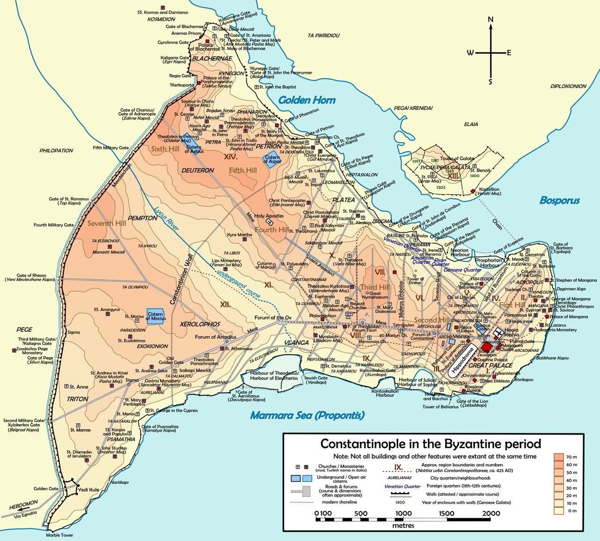
拜占庭时期的君士坦丁堡。左侧弧线是狄奥多西陆墙，右端尖角是皇宫与圣索菲亚所在的老城核心（今苏丹艾哈迈德区），上方水湾是金角湾（Golden Horn）。地图：Cplakidas，CC BY-SA 3.0。Byzantine Constantinople. The curve on the left is the Theodosian Land Walls, the tip on the right is the old core with the palace and Hagia Sophia (today's Sultanahmet), and the inlet at the top is the Golden Horn. Map: Cplakidas, CC BY-SA 3.0.
出发前核对：门票和开放时间是 2026 年 8–9 月的公开信息，土耳其门票涨价很频繁，清真寺在礼拜时间和周五中午对游客关闭。每天出门前用 Google Maps 看一眼当天营业时间。Check before you go: tickets and hours are from public information of Aug–Sep 2026. Turkish ticket prices rise often, and mosques close to visitors at prayer times and on Friday around noon. Check the day's hours on Google Maps before heading out.
Main Quest
罗马去哪儿了？Where did Rome go?
今天我们管这个帝国叫“拜占庭”，但它的人民从没这么叫过自己。他们自称 Ῥωμαῖοι（Rhomaioi，罗马人），国家叫“罗马人的国度”。“拜占庭帝国”这个名字是 1557 年德国学者沃尔夫（Hieronymus Wolf）才发明的。Today we call this empire "Byzantine", but its people never called themselves that. They called themselves Rhomaioi (Romans) and their state "the realm of the Romans". The term "Byzantine Empire" was only coined in 1557 by the German scholar Hieronymus Wolf.
有意思的是，“罗马”这个名字在 1453 年之后并没有消失，它换了好几个主人：阿拉伯人和波斯人把拜占庭叫 Rûm；突厥人在安纳托利亚建立的国家叫“罗姆苏丹国”（Sultanate of Rûm）；穆罕默德二世攻下城后自称 Kayser-i Rûm（罗马的凯撒）；奥斯曼的欧洲领土叫 Rumeli（罗马人之地）；直到今天，土耳其的希腊东正教徒仍被称为 Rum。The interesting part: the name "Rome" did not vanish in 1453. It passed through several owners. Arabs and Persians called Byzantium Rûm; the Turkish state in Anatolia was the Sultanate of Rûm; after taking the city Mehmed II styled himself Kayser-i Rûm (Caesar of Rome); the Ottoman European provinces were Rumeli (land of the Romans); and to this day Turkey's Greek Orthodox citizens are called Rum.
你的研究问题：在伊斯坦布尔街头找到“罗马”被继承、被争夺、被改名的实物证据，最后写一段你自己的结论：奥斯曼是罗马的终结者，还是另一种继承者？Your research question: find physical evidence on Istanbul's streets of "Rome" being inherited, fought over and renamed, then write your own conclusion: were the Ottomans the destroyers of Rome, or another kind of heir?
Roma→Rhomaioi 罗马人Rhomaioi, "Romans"→Rûm（阿拉伯语/波斯语）Rûm (Arabic/Persian)→Rûm 苏丹国Sultanate of Rûm→Kayser-i Rûm→Rumeli / Rum
1. 六十天重建城墙的铭文1. The inscription of the 60-day rebuilding
一块用拉丁文和希腊文两种语言夸耀“两个月修好城墙”的石头。A stone boasting in two languages, Latin and Greek, that the walls were rebuilt in two months.
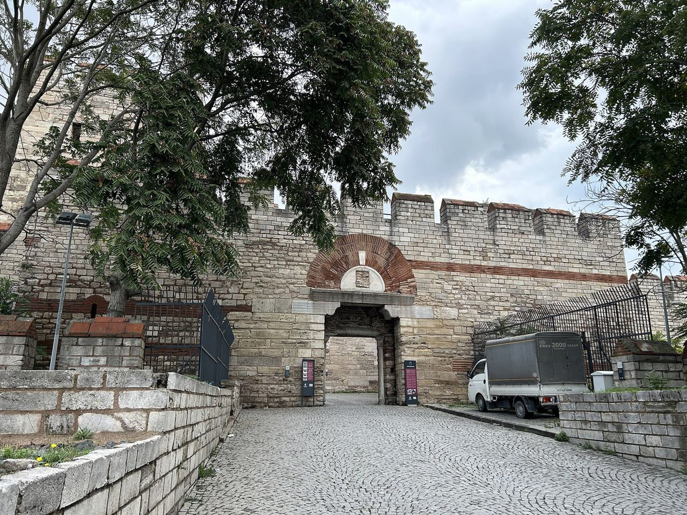
Mevlanakapı 城门内侧。Premeditated，CC BY-SA 4.0。Mevlanakapı, inner side. Premeditated, CC BY-SA 4.0.
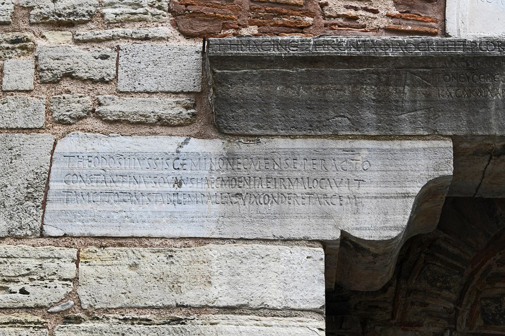
城门外侧墙面，可以看到刻字的石块。Dosseman，CC BY-SA 4.0。Outer face of the gate, with inscribed blocks. Dosseman, CC BY-SA 4.0.
详细讲解Detailed notes
背景Background
447 年 1 月，一场大地震震塌了狄奥多西城墙的一大段，据记载倒了 57 座塔楼。偏偏这时匈人王阿提拉（Attila）正在巴尔干一路劫掠，向首都逼近。东方禁卫军长官君士坦丁努斯（Flavius Constantinus，和君士坦丁大帝无关）动员全城，连赛车场的“蓝党”“绿党”这对死对头都被组织起来轮班搬石头。据说不到两个月，城墙就修好了，还顺手加建了外墙，形成了今天看到的三重防线。阿提拉最终没有进攻君士坦丁堡。In January 447 a great earthquake brought down a long stretch of the Theodosian Walls; 57 towers are said to have fallen. At that very moment Attila the Hun was raiding through the Balkans towards the capital. The praetorian prefect Flavius Constantinus (no relation to Constantine the Great) mobilised the whole city; even the Blues and Greens, the rival Hippodrome factions, were organised into shifts to haul stone. The walls were reportedly repaired in under two months, and an outer wall was added, creating the triple defence you see today. Attila never attacked Constantinople.
事后，人们在这座门上刻了两段铭文。拉丁文那段大意是：Afterwards two inscriptions were carved on this gate. The Latin one reads roughly:
THEODOSII IVSSIS GEMINO NEC MENSE PERACTO / CONSTANTINVS OVANS HAEC MOENIA FIRMA LOCAVIT / TAM CITO TAM STABILEM PALLAS VIX CONDERET ARCEM “奉狄奥多西之命，不足两月，君士坦丁努斯凯旋般建起这道坚固城墙。即便是雅典娜，也难以这么快建成这样稳固的城堡。”THEODOSII IVSSIS GEMINO NEC MENSE PERACTO / CONSTANTINVS OVANS HAEC MOENIA FIRMA LOCAVIT / TAM CITO TAM STABILEM PALLAS VIX CONDERET ARCEM "By order of Theodosius, in less than two months, Constantinus triumphantly built these strong walls. Pallas Athena herself could hardly have built so stable a citadel so fast."
希腊文那段说的是同一件事：“六十天里，为热爱权杖的皇帝，长官君士坦丁努斯在墙上又筑了一道墙。”The Greek one says the same thing: "In sixty days, for the sceptre-loving emperor, the prefect Constantinus added wall to wall."
现场怎么找How to find it
Mevlanakapı 在 Topkapı 门和 Silivrikapı 之间，城门本身很好认。铭文刻在城门附近的大理石块上，字母已经很浅。在门的城外一侧和城内一侧各绕一圈，抬头看门楼周围的白色石块。Mevlanakapı lies between the Topkapı gate and Silivrikapı and is easy to recognise. The inscriptions are on marble blocks around the gate, and the letters are very faint. Walk a full circle on both the outer and inner side and look up at the white blocks around the gatehouse.
侧光（上午或傍晚）时字最容易看清，可以把手机拍下来再放大看。Raking light (morning or late afternoon) shows the letters best. Take a photo and zoom in.
这一段墙在 20 世纪做过修复，新旧石块混在一起。古老的铭文石通常颜色更深、表面更粗糙。This stretch was restored in the 20th century, so old and new stones are mixed. Ancient inscribed blocks are usually darker and rougher.
“Mevlana”这个名字来自城外曾经有一座梅夫拉维教团（旋转舞苦修僧）的修道所，和线索 10 的鲁米是同一个教团。The name "Mevlana" comes from a Mevlevi (whirling dervish) lodge that once stood outside the gate, the same order as Rumi in clue 10.
它说明了什么What it tells us
5 世纪的东罗马，官方和军方的语言还是拉丁文，希腊文是城里大多数人说的话。两种语言并排刻在一块石头上，正好记录了一个“说希腊语的罗马”正在形成。到 7 世纪希拉克略皇帝时，帝国行政才彻底改用希腊语。但不管说什么语言，他们都始终自称“罗马人”。In the 5th-century Eastern Roman Empire, the language of government and army was still Latin, while most people in the city spoke Greek. Two languages side by side on one stone record a "Greek-speaking Rome" taking shape. Only under Emperor Heraclius in the 7th century did the administration switch fully to Greek. Whatever language they spoke, they always called themselves Romans.
想一想Think about it
如果一个国家的语言从拉丁文变成了希腊文，首都从罗马变成了君士坦丁堡，它还算不算“罗马”？如果答案是“算”，那为什么换成说突厥语、信伊斯兰教的人以后，就不算了呢？If a state's language changes from Latin to Greek and its capital moves from Rome to Constantinople, is it still "Rome"? If yes, why should it stop being Rome when the people in charge speak Turkish and follow Islam?
2. 在马赛克里找到“ΡΩΜΑΙΩΝ”2. Find "ΡΩΜΑΙΩΝ" in the mosaics
皇帝马赛克上，用希腊文写着“罗马人的皇帝”。On the imperial mosaics, Greek letters read "emperor of the Romans".
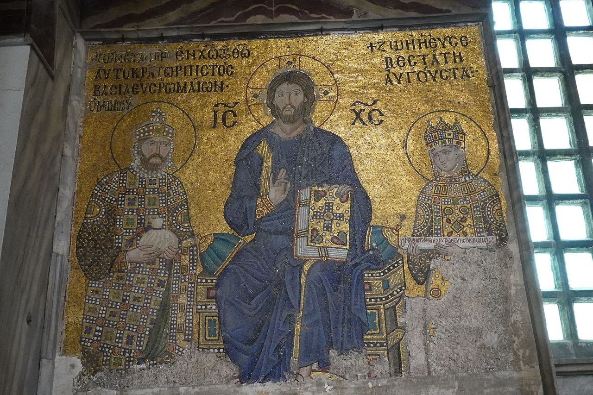
佐伊女皇马赛克：基督居中，左为君士坦丁九世，右为佐伊。Joseolgon，CC BY 4.0。Zoe mosaic: Christ in the centre, Constantine IX on the left, Zoe on the right. Joseolgon, CC BY 4.0.
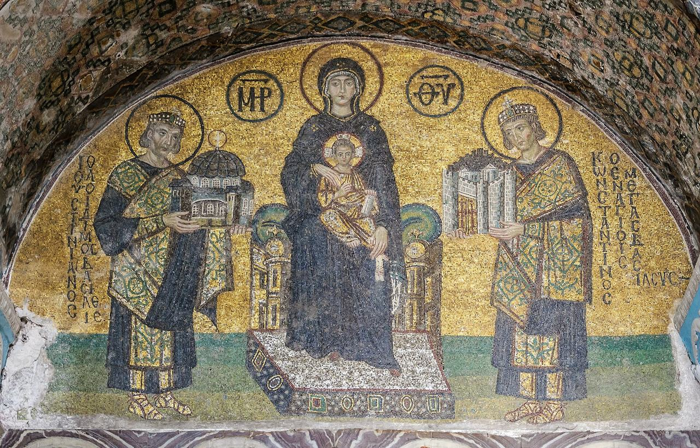
西南入口：君士坦丁献城市，查士丁尼献教堂。公有领域。Southwest entrance: Constantine offers the city, Justinian the church. Public domain.
详细讲解Detailed notes
背景Background
南画廊东端有两幅皇帝马赛克，都是“皇帝夫妇向基督或圣母献礼”的构图：At the east end of the south gallery are two imperial mosaics, both showing an imperial couple presenting gifts to Christ or the Virgin:
佐伊马赛克（11 世纪）：女皇佐伊（Zoe）是马其顿王朝的公主，一生嫁了三任皇帝。画面里男皇帝的头像和名字明显被改过，学者普遍认为最初画的是她的第一任丈夫罗曼努斯三世，后来换成了第三任丈夫君士坦丁九世（Constantine IX Monomachos）。一幅“可以换头”的马赛克，本身就是宫廷政治的证据。Zoe mosaic (11th century): Empress Zoe, a Macedonian-dynasty princess, married three emperors. The male emperor's face and name have clearly been altered; scholars generally think it first showed her first husband Romanos III and was later changed to her third, Constantine IX Monomachos. A mosaic where the head can be swapped is itself evidence of court politics.
科穆宁马赛克（12 世纪）：约翰二世·科穆宁和匈牙利出身的皇后伊琳娜，中间是圣母子。他就是泽伊雷克（潘托克拉托修道院）的建造者。Komnenos mosaic (12th century): John II Komnenos and his Hungarian-born empress Irene, with the Virgin and Child between them. John is the founder of Zeyrek (the Pantokrator Monastery).
西南入口马赛克（10 世纪）：圣母子居中，君士坦丁大帝献上城市模型，查士丁尼献上圣索菲亚模型。这是城市的“建城神话”：一位皇帝建城，一位皇帝建教堂。Southwest entrance mosaic (10th century): the Virgin and Child in the centre; Constantine the Great offers a model of the city, Justinian a model of Hagia Sophia. It is the city's founding myth: one emperor built the city, another built the church.
现场怎么找How to find it
佐伊和科穆宁马赛克并排在南画廊尽头的东墙上，德西斯马赛克也在南画廊，三幅可以一次看完。The Zoe and Komnenos mosaics are side by side on the east wall at the end of the south gallery; the Deësis is also in the south gallery, so you can see all three together.
你的任务：在皇帝头部两侧的金色铭文里找到这个词：ΡΩΜΑΙΩΝ（Rhomaiōn，“罗马人的”）。完整的句子大意是“在基督神里，忠信的罗马人的皇帝与独裁者”（希腊文 ΠΙΣΤΟΣ ΒΑΣΙΛΕΥΣ ΡΩΜΑΙΩΝ）。拜占庭的字母常有缩写和连写，找到 ΡΩΜ 开头的那组字母就算成功。Your task: in the gold inscription beside the emperor's head, find the word ΡΩΜΑΙΩΝ (Rhomaiōn, "of the Romans"). The full phrase means roughly "in Christ God, faithful emperor and autocrat of the Romans" (Greek ΠΙΣΤΟΣ ΒΑΣΙΛΕΥΣ ΡΩΜΑΙΩΝ). Byzantine lettering often uses abbreviations and ligatures; finding the group starting with ΡΩΜ counts.
西南入口马赛克在西南门厅的门楣上方。如果游客路线不经过那里（入口经常调整），就以前两幅为准。The southwest entrance mosaic is above the door of the southwest vestibule. If the visitor route doesn't pass there (entrances change often), the first two are enough.
它说明了什么What it tells us
这是最直接的证据：11、12 世纪的皇帝在帝国最重要的教堂里，用金色马赛克宣布自己是“罗马人的皇帝”。我们叫他们“拜占庭人”，他们自己从来不这么叫。This is the most direct evidence: 11th- and 12th-century emperors declared themselves "emperor of the Romans" in gold mosaic in the empire's most important church. We call them Byzantines; they never did.
想一想Think about it
同一个画廊里，还挂着 19 世纪奥斯曼时期的巨大阿拉伯文书法圆牌。从同一个位置看过去，你能同时看到“罗马人的皇帝”和“安拉、穆罕默德”。这座建筑现在属于谁的历史？The same gallery also faces the huge 19th-century Ottoman Arabic calligraphy roundels. From one spot you can see both "emperor of the Romans" and "Allah, Muhammad". Whose history does this building belong to now?
第一个攻破这座城的，不是突厥人，而是十字军。The first to break into this city were not Turks but crusaders.
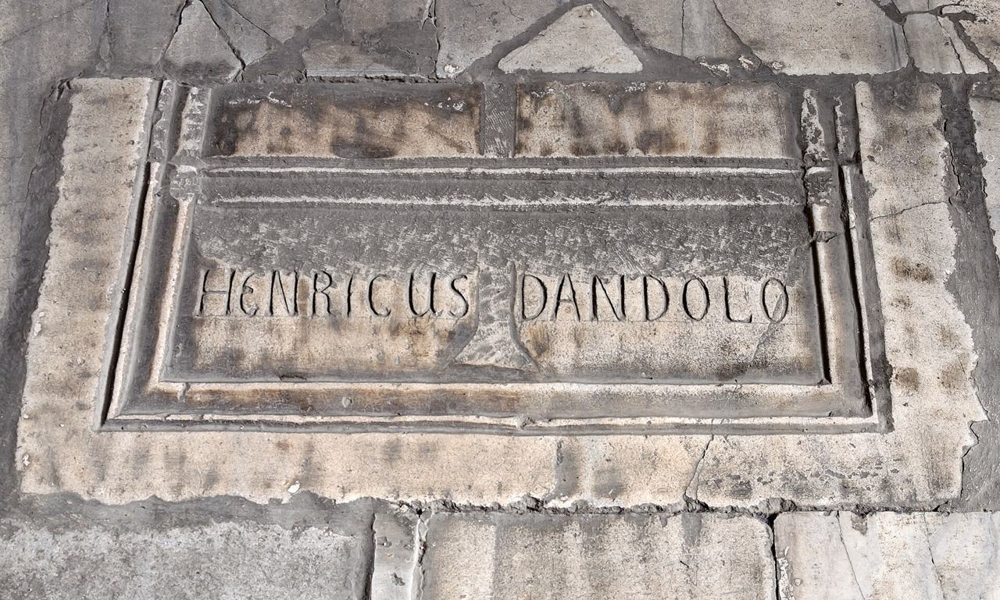
地面上的 HENRICUS DANDOLO 字样。Myrabella，CC BY-SA 3.0。HENRICUS DANDOLO in the floor. Myrabella, CC BY-SA 3.0.详细讲解Detailed notes
背景Background
1202 年，第四次十字军本来要去埃及打穆斯林。但十字军欠了威尼斯一大笔造船费，年迈且几乎失明的威尼斯总督恩里科·丹多洛（Enrico Dandolo，当时九十多岁）说：可以先替我们打几个地方抵债。再加上一位流亡的拜占庭王子许诺巨额报酬请他们帮忙夺位，十字军就一路被“改道”到了君士坦丁堡。In 1202 the Fourth Crusade was meant to attack the Muslims in Egypt. But the crusaders owed Venice a fortune for ships, and the aged, nearly blind Doge Enrico Dandolo (then in his nineties) proposed they pay it off by capturing a few places for Venice. Add an exiled Byzantine prince promising huge rewards for help seizing the throne, and the crusade was "diverted" all the way to Constantinople.
1204 年 4 月，十字军攻破海墙，在城里洗劫了三天。教堂被抢，圣索菲亚的祭坛被砸，大量圣物和艺术品被运往西方。赛车场上的四匹青铜骏马，就是在这时被运到了威尼斯，今天还在圣马可大教堂。十字军在这里建立了“拉丁帝国”，直到 1261 年拜占庭人才收复这座城。丹多洛 1205 年死在君士坦丁堡，葬在了圣索菲亚。In April 1204 the crusaders broke through the sea walls and sacked the city for three days. Churches were looted, Hagia Sophia's altar smashed, and countless relics and artworks shipped west. The four bronze horses of the Hippodrome were taken to Venice then and still stand at St Mark's. The crusaders set up the "Latin Empire"; the Byzantines only retook the city in 1261. Dandolo died in Constantinople in 1205 and was buried in Hagia Sophia.
现场怎么找How to find it
在南画廊的地板上，离德西斯马赛克不远。一块长方形石板，上面刻着 HENRICUS DANDOLO。On the floor of the south gallery, not far from the Deësis mosaic: a rectangular slab inscribed HENRICUS DANDOLO.
注意：现在这块石板一般认为是 19 世纪修复时放的纪念标记，不是 1205 年的原物。原来的墓在 1453 年后很可能就被毁了。Note: the slab is generally thought to be a 19th-century marker placed during restoration, not the 1205 original. The real tomb was probably destroyed after 1453.
它说明了什么What it tells us
拜占庭从 1204 年的打击中再也没有真正恢复。收复后的帝国又小又穷，只剩首都和几块零散领土，这才让奥斯曼人能一步步把它包围起来。很多历史学家认为，1204 年比 1453 年更像“罗马”真正的断裂点。东西方教会的仇恨也因此加深，2001 年教宗若望保禄二世还为此正式道歉。Byzantium never truly recovered from 1204. The restored empire was small and poor, reduced to the capital and scattered territories, which let the Ottomans encircle it step by step. Many historians see 1204, more than 1453, as the real break in "Rome". It also deepened the hostility between the Eastern and Western churches; in 2001 Pope John Paul II formally apologised.
想一想Think about it
一个威尼斯人葬在拜占庭最神圣的教堂里，而他正是洗劫这座城的人。站在墓碑前想一想：摧毁“罗马”的，到底是谁？A Venetian lies buried in Byzantium's holiest church, and he is the man who sacked the city. Standing at the slab, ask yourself: who actually destroyed "Rome"?
圣索菲亚 · 楼上画廊大理石栏杆（Day 1）Hagia Sophia · marble balustrade of the upper gallery (Day 1)
4. 维京人刻的如尼文涂鸦4. Viking runic graffiti
一千多年前，一个叫 Halfdan 的北欧人在这里“到此一游”。More than a thousand years ago, a Norseman named Halfdan left his mark here.
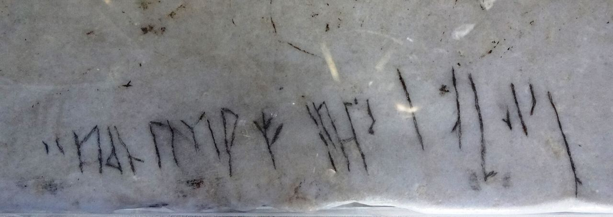
大理石栏杆上的如尼文刻痕。Hermann Junghans，CC BY-SA 3.0 DE。Runic scratches on the marble balustrade. Hermann Junghans, CC BY-SA 3.0 DE.详细讲解Detailed notes
背景Background
1964 年，人们在圣索菲亚楼上画廊的大理石栏杆上发现了一段如尼文（runes），这是北欧维京人使用的字母。能辨认的只有一个名字“Halfdan”，后面的字大多磨掉了，通常推测原句是“Halfdan 刻了这些如尼文”。年代大约在 9 世纪。后来在另一侧画廊又发现了第二处如尼文刻痕。In 1964 a runic inscription, the alphabet of the Norse Vikings, was found on a marble balustrade in Hagia Sophia's upper gallery. Only one name, "Halfdan", can be read; the rest is worn away, and it is usually reconstructed as "Halfdan carved these runes". It probably dates to the 9th century. A second runic graffito was later found in another gallery.
为什么会有维京人？988 年，基辅大公弗拉基米尔派了 6000 名北欧武士给拜占庭皇帝巴西尔二世，换来了皇帝妹妹的婚约，自己也受洗成了东正教徒（这就是俄罗斯东正教的起点）。这支部队成了皇帝的贴身禁卫军，叫“瓦兰吉卫队”（Varangian Guard）。后来的挪威国王“无情者”哈拉尔就在这里当过兵。1066 年诺曼人征服英格兰后，不少失去家园的盎格鲁-撒克逊人也跑来加入了这支卫队。Why Vikings? In 988 Grand Prince Vladimir of Kiev sent 6,000 Norse warriors to Emperor Basil II in exchange for marriage to the emperor's sister, and was himself baptised Orthodox (the starting point of Russian Orthodoxy). These troops became the emperor's personal bodyguard, the Varangian Guard. Harald Hardrada, later king of Norway, served here. After the Norman conquest of 1066, many dispossessed Anglo-Saxons also came to join the guard.
现场怎么找How to find it
在楼上画廊靠中殿一侧的大理石栏杆顶面上，通常被一块透明保护罩盖着，旁边有时有说明牌。On the top of the marble balustrade on the nave side of the upper gallery, usually under a transparent cover, sometimes with a sign.
刻痕很浅，用手机手电筒从侧面打光会清楚很多。The scratches are very shallow; side-lighting with your phone torch helps a lot.
找不到就问工作人员“Viking runes?”，它很有名。If you can't find it, ask staff "Viking runes?" It's well known.
它说明了什么What it tells us
“罗马人的皇帝”身边，站的是北欧人、英格兰人、亚美尼亚人、格鲁吉亚人。拜占庭军队里也长期有突厥人：佩切涅格人、库曼人，甚至塞尔柱突厥人的雇佣兵（拜占庭人叫他们 Tourkopouloi，“突厥人之子”）。“罗马人”从来不是一个血统概念，而是一个政治和宗教身份：效忠皇帝、信东正教，你就是罗马人。Around the "emperor of the Romans" stood Norsemen, Englishmen, Armenians and Georgians. The Byzantine army also long included Turks: Pechenegs, Cumans, even Seljuk mercenaries (the Byzantines called them Tourkopouloi, "sons of Turks"). "Roman" was never a matter of blood but a political and religious identity: loyal to the emperor and Orthodox in faith, you were a Roman.
想一想Think about it
如果“罗马人”可以是维京人、亚美尼亚人、受洗的突厥人，那它的边界在哪里？这一点会直接影响你对最后那个问题的回答。If a "Roman" could be a Viking, an Armenian or a baptised Turk, where is the boundary? This shapes your answer to the final question.
苏丹艾哈迈德广场（Day 1）Sultanahmet Square (Day 1)
5. 广场的形状就是赛车场5. The square is the shape of the Hippodrome
你脚下这块长条形广场，就是罗马赛车场的跑道。The long square under your feet is the racetrack of the Roman Hippodrome.
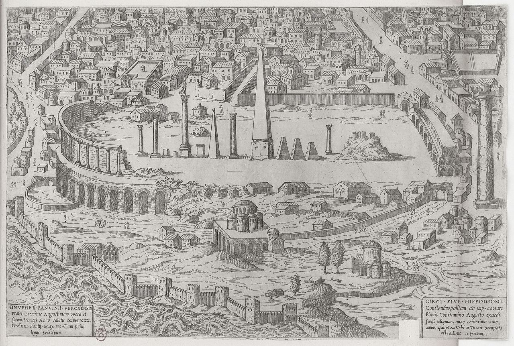
潘维尼奥（Onofrio Panvinio）16 世纪出版的赛车场版画，当时还能看到看台残迹。公有领域。Onofrio Panvinio's 16th-century engraving of the Hippodrome, when remains of the stands were still visible. Public domain.
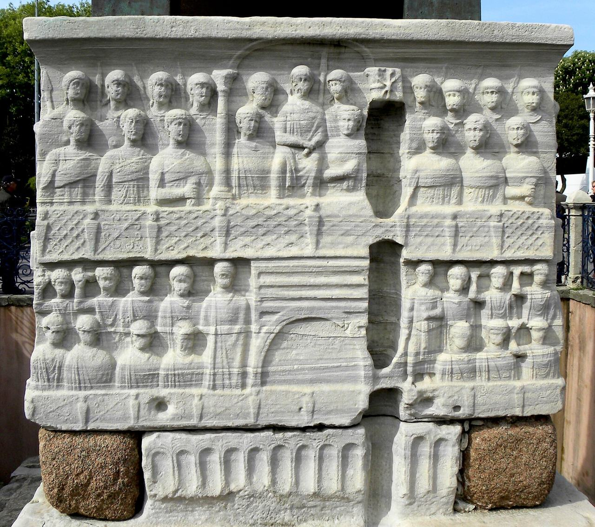
方尖碑底座：皇帝坐在包厢里，下面是观众。Ian Scott，CC BY-SA 2.0。Obelisk base: the emperor in his box above the spectators. Ian Scott, CC BY-SA 2.0.
详细讲解Detailed notes
背景Background
赛车场（Hippodrome）是罗马城市的标配，相当于今天的体育场加政治集会场所。君士坦丁堡的赛车场长约 450 米，可以容纳大约 10 万人，北端连着皇宫，皇帝从宫里直接走进包厢（kathisma）看比赛。战车比赛分“蓝党”和“绿党”，这两个车迷团体同时也是政治派系，532 年的尼卡暴动差点推翻了查士丁尼。A hippodrome was standard in Roman cities, a stadium and political assembly ground in one. Constantinople's was about 450 m long and held around 100,000 people. Its north end joined the palace, so the emperor could walk straight into his box (kathisma). Chariot racing was split between the Blues and the Greens, fan clubs that were also political factions; the Nika riot of 532 nearly toppled Justinian.
跑道中间有一道分隔带（spina），上面摆满了从帝国各地搬来的纪念物。今天还剩三件，正好排成一条直线：Down the middle of the track ran a central barrier (spina) lined with monuments brought from across the empire. Three survive, standing in a straight line:
埃及方尖碑：原是约前 1450 年法老图特摩斯三世立在卡纳克神庙的，390 年由狄奥多西一世运来竖起。底座有拉丁文和希腊文铭文，夸耀竖立工程有多快。有意思的是，拉丁文说用了 30 天，希腊文说 32 天。Egyptian obelisk: raised by Pharaoh Thutmose III at Karnak around 1450 BC, brought and erected by Theodosius I in 390. Its base carries Latin and Greek inscriptions boasting how fast it was put up; amusingly, the Latin says 30 days and the Greek says 32.
蛇柱：前 479 年希腊城邦联军在普拉提亚击败波斯后，在德尔斐献给阿波罗的青铜三蛇柱，由君士坦丁运来。三个蛇头 1700 年前后被打掉了，其中一个上颌现藏伊斯坦布尔考古博物馆。Serpent Column: the bronze three-serpent column dedicated to Apollo at Delphi after the Greek allies beat the Persians at Plataea in 479 BC, brought here by Constantine. The three heads were knocked off around 1700; part of one head is now in the Istanbul Archaeology Museums.
砌筑方尖碑：用石块砌成，原本包着镀金铜板，1204 年被十字军剥走熔化。Walled Obelisk: built of stone blocks, once sheathed in gilded bronze plates that the crusaders stripped and melted down in 1204.
现场怎么找How to find it
站在三座纪念物所在的那条线上，往两头看：广场的长轴就是当年的跑道方向。Stand on the line of the three monuments and look both ways: the long axis of the square is the direction of the old track.
方尖碑底座四面都有浮雕，找皇帝坐在包厢里、下面观众举手欢呼的那一面，以及描绘竖立方尖碑过程的那一面。The obelisk base has reliefs on all four sides. Find the one with the emperor in his box above cheering spectators, and the one showing the obelisk being raised.
额外探索：广场南端往下走，从 Nakilbent 街一带可以看到赛车场弯道（sphendone）的巨大拱形地基，那是赛车场留下的最大一块实体结构。Extra exploration: walk down from the south end of the square; around Nakilbent Street you can see the huge arched substructure of the Hippodrome's curved end (sphendone), the largest surviving piece of the building.
它说明了什么What it tells us
奥斯曼人没有在赛车场上盖房子，而是把它保留成了城市广场，改名“马场”（At Meydanı），继续用来举行庆典、游行、处决和集会。看台的石头被拆去盖了别的建筑，但城市的骨架没变。易卜拉欣帕夏宫（今天的伊斯兰艺术博物馆）就建在原来的看台上。The Ottomans did not build over the Hippodrome. They kept it as a city square, renamed it At Meydanı ("Horse Square"), and kept using it for festivals, processions, executions and gatherings. The stone of the stands was carted off for other buildings, but the city's skeleton stayed. The İbrahim Pasha Palace (today's Museum of Turkish and Islamic Arts) stands on the old stands.
想一想Think about it
一座埃及法老的方尖碑，被罗马皇帝竖在希腊城市里，现在立在土耳其的广场上，四周是清真寺。这块广场同时属于几种文明？An Egyptian pharaoh's obelisk, raised by a Roman emperor in a Greek city, now stands in a Turkish square ringed by mosques. How many civilisations does this square belong to?
托普卡帕宫 · 第一庭院（Day 2）Topkapı Palace · First Court (Day 2)
6. 从没改成清真寺的教堂6. The church that never became a mosque
苏丹宫门里有一座教堂，后殿还留着一个大十字架。Inside the sultan's palace gate stands a church whose apse still holds a large cross.
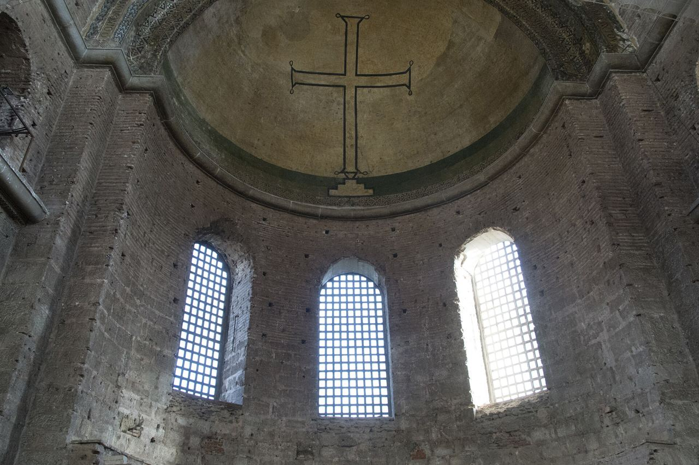
圣伊琳娜教堂后殿半穹顶上的十字架马赛克。Dosseman，CC BY-SA 4.0。Cross mosaic in the apse semi-dome of Hagia Irene. Dosseman, CC BY-SA 4.0.详细讲解Detailed notes
背景Background
圣伊琳娜（Hagia Irene，“神圣和平”）是城里最早的教堂之一，在圣索菲亚建成前曾是主教座堂。381 年第一次君士坦丁堡大公会议在这里召开，基督教最核心的信经《尼西亚—君士坦丁堡信经》就在这次会议上定稿，今天全世界的东正教、天主教和许多新教徒仍在念它。Hagia Irene ("Holy Peace") is one of the city's oldest churches and was the cathedral before Hagia Sophia was built. The First Council of Constantinople met here in 381 and finalised the Nicene–Constantinopolitan Creed, which Orthodox, Catholics and many Protestants worldwide still recite.
532 年尼卡暴动时它被烧毁，查士丁尼重建；740 年大地震后又重修。重修它的皇帝君士坦丁五世是“圣像破坏运动”最坚决的推动者，他认为画人像是偶像崇拜，所以后殿只放了一个简单的十字架，没有基督或圣母像。拜占庭后来恢复了圣像，大部分这类十字架都被改画掉了，这里却幸运地留了下来。It burned in the Nika riot of 532 and was rebuilt by Justinian, then repaired again after the great earthquake of 740. The emperor who repaired it, Constantine V, was the most determined champion of Iconoclasm and regarded images of people as idolatry, so the apse received only a simple cross, with no Christ or Virgin. When Byzantium restored images, most such crosses were replaced; this one luckily survived.
现场怎么找How to find it
托普卡帕宫帝王之门进去后左手边的红砖大建筑。门票包含在托普卡帕联票里，也可单独买。The big red-brick building on your left after the Imperial Gate of Topkapı. Entry is included in the Topkapı combined ticket or sold separately.
进门后一直看向尽头的半圆形后殿，抬头就是那个黑色线条的十字架。Inside, look straight to the semicircular apse at the far end and up: the cross drawn in dark lines is there.
后殿下方的阶梯式座位（synthronon）是给主教和神职人员坐的，这类原物现在已经很少见了。The stepped seating below the apse (synthronon) was for the bishop and clergy; originals like this are now rare.
它说明了什么What it tells us
1453 年后，它被围进了苏丹的宫墙里，近卫军拿它当军械库。19 世纪中期，奥斯曼人在这里陈列古代兵器和文物，这是奥斯曼帝国最早的博物馆之一，也是今天考古博物馆的前身。征服者并没有把所有教堂都改成清真寺：实用的就拿来用，有些交给东正教会，有些改作他用。After 1453 it was enclosed within the sultan's palace walls and used by the Janissaries as an arsenal. In the mid-19th century the Ottomans displayed old weapons and antiquities here, one of the empire's first museums and the forerunner of today's Archaeology Museums. The conquerors did not turn every church into a mosque: useful buildings were put to use, some were handed to the Orthodox Church, and some changed function.
想一想Think about it
苏丹每天经过一座保留着十字架的教堂。这是宽容、实用主义，还是不在乎？可以和法提赫清真寺（线索 7）的做法比较一下。Every day the sultan walked past a church that kept its cross. Tolerance, pragmatism, or indifference? Compare it with what happened at the Fatih Mosque (clue 7).
法提赫清真寺（Day 3）Fatih Mosque (Day 3)
7. 征服者葬在罗马皇帝的墓地上7. The Conqueror buried in the emperors' cemetery
穆罕默德二世的陵墓，建在君士坦丁大帝陵墓教堂的原址上。Mehmed II's tomb stands on the site of Constantine the Great's burial church.
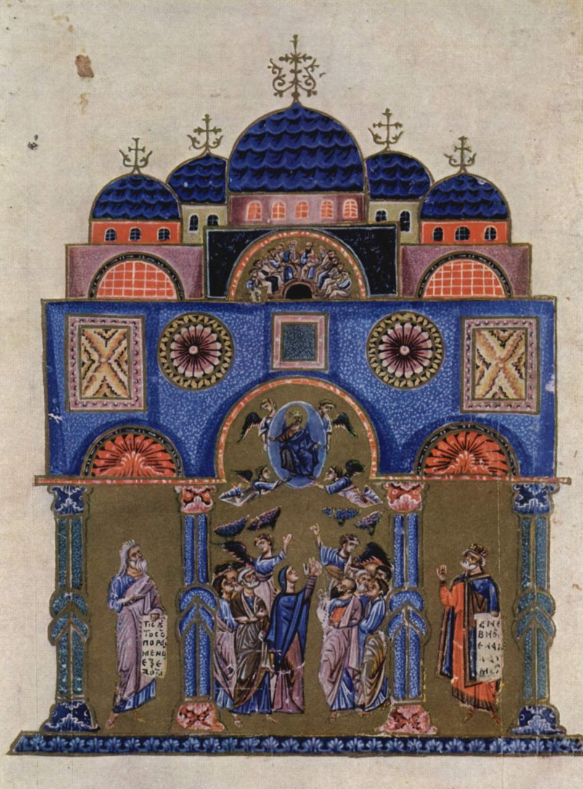
12 世纪手抄本里的圣使徒教堂，五个穹顶的十字形教堂。公有领域。The Church of the Holy Apostles in a 12th-century manuscript: a cross-shaped church with five domes. Public domain.
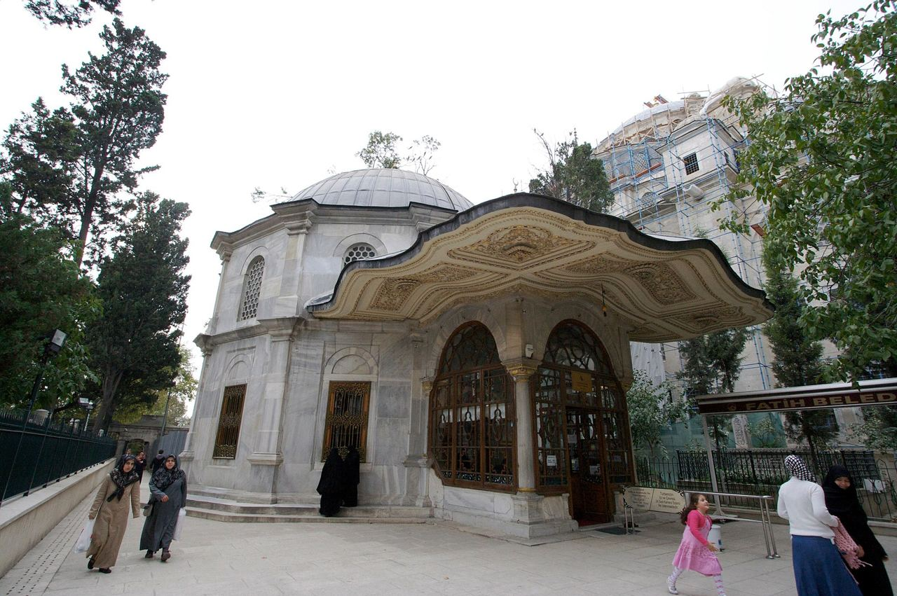
法提赫清真寺后院的穆罕默德二世陵墓。Sitomon，CC BY-SA 2.0。Mehmed II's tomb behind the Fatih Mosque. Sitomon, CC BY-SA 2.0.
详细讲解Detailed notes
背景Background
圣使徒教堂（Church of the Holy Apostles）由君士坦丁大帝开建，他想把自己葬在十二使徒的纪念物中间，自称“第十三位使徒”。查士丁尼在 6 世纪把它重建成一座有五个穹顶的十字形大教堂，威尼斯的圣马可大教堂就是照着它的样子建的。此后七百年，几乎所有拜占庭皇帝都葬在这里，用的是只有皇帝才能用的紫红色斑岩石棺。The Church of the Holy Apostles was begun by Constantine the Great, who wanted to be buried among memorials to the twelve apostles and styled himself the "thirteenth apostle". Justinian rebuilt it in the 6th century as a great cross-shaped church with five domes, the model for St Mark's in Venice. For the next seven hundred years nearly every Byzantine emperor was buried here, in purple porphyry sarcophagi reserved for emperors.
1453 年后，穆罕默德二世起初把这座教堂交给新任命的东正教牧首当牧首座堂。几年后牧首迁走，教堂被拆，1463–1470 年在原址建起了法提赫清真寺和一整套建筑群。他自己死后也葬在这里。After 1453 Mehmed II first gave the church to the newly appointed Orthodox patriarch as his cathedral. A few years later the patriarch moved out, the church was demolished, and the Fatih Mosque and its complex were built on the site in 1463–1470. Mehmed himself was buried here.
现场怎么找How to find it
清真寺本身是 1766 年地震后重建的，后院（礼拜朝向的那一侧）有一座带门廊的穹顶小建筑，就是他的陵墓（türbe），可以脱鞋进去。The mosque itself was rebuilt after the 1766 earthquake. In the rear courtyard (on the qibla side) is a small domed building with a porch: his tomb (türbe). You may enter after taking off your shoes.
延伸证据：几具从圣使徒教堂流出的皇帝斑岩石棺，现在就摆在伊斯坦布尔考古博物馆正门前的院子里。如果 Day 2 去了考古博物馆，去找那些深紫红色的巨大石棺。Extra evidence: several imperial porphyry sarcophagi from the Holy Apostles now stand in the courtyard in front of the Istanbul Archaeology Museums. If you visit the museum on Day 2, look for those huge deep-purple coffins.
它说明了什么What it tells us
穆罕默德二世不只是“征服者”。他自称 Kayser-i Rûm（罗马的凯撒），保留了东正教牧首，让希腊学者克里托布洛斯（Kritoboulos）用希腊文为他写传记，请威尼斯画家贝利尼为他画像，收藏希腊文书籍。1480 年他甚至出兵占领了意大利南部的奥特朗托，很多人认为他的下一个目标是罗马城本身。Mehmed II was more than a "conqueror". He styled himself Kayser-i Rûm (Caesar of Rome), kept the Orthodox patriarchate, had the Greek scholar Kritoboulos write his biography in Greek, had the Venetian painter Bellini paint his portrait, and collected Greek books. In 1480 he even seized Otranto in southern Italy, and many believe his next target was Rome itself.
想一想Think about it
把自己的陵墓建在罗马皇帝的墓地上，可以理解为“抹掉对方”，也可以理解为“接过对方的位置”。你倾向于哪一种？证据是什么？Building your tomb on the emperors' burial ground can be read as "erasing them" or as "taking their place". Which do you lean towards, and what is your evidence?
博斯普鲁斯海峡两岸（Day 4，可从渡轮上看）Both shores of the Bosphorus (Day 4, visible from a ferry)
8. Rumeli 与 Anadolu：两个名字里的希腊与罗马8. Rumeli and Anadolu: Rome and Greece in two names
海峡两岸的两座城堡，名字分别来自“罗马”和希腊语的“东方”。Two castles facing each other across the strait, named after "Rome" and the Greek word for "East".
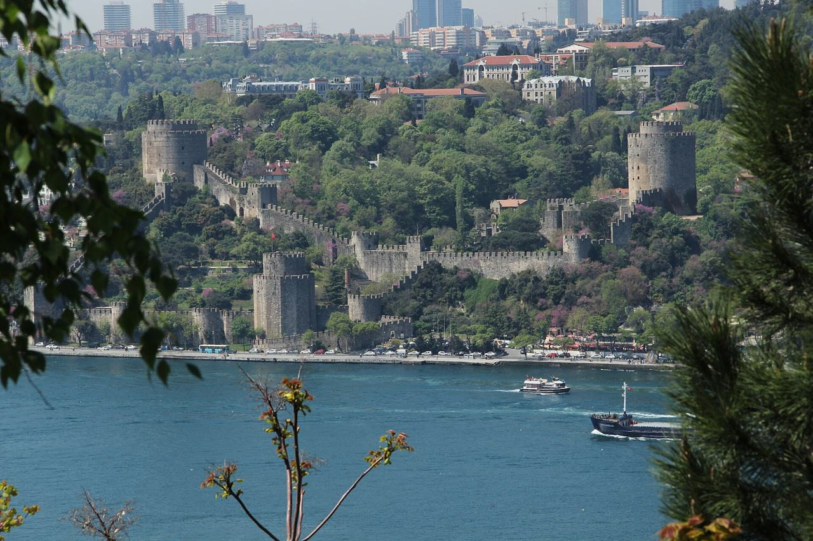
欧洲岸的鲁梅利堡垒（1452 年）。Hamdigumus，CC0。Rumeli Hisarı on the European shore (1452). Hamdigumus, CC0.
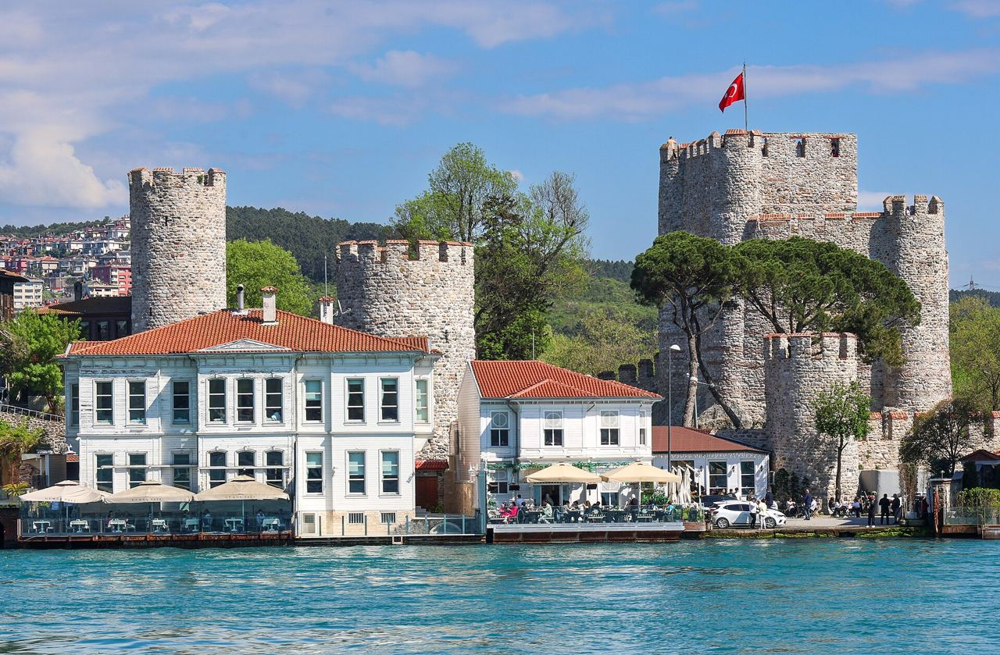
亚洲岸的阿纳多卢堡垒（14 世纪末）。flowcomm，CC BY 2.0。Anadolu Hisarı on the Asian shore (late 14th century). flowcomm, CC BY 2.0.
详细讲解Detailed notes
背景Background
1394 年前后，苏丹巴耶济德一世在海峡亚洲岸建了阿纳多卢堡垒。半个多世纪后，1452 年春，他的曾孙穆罕默德二世在正对岸、海峡最窄处（宽约 660 米）建起鲁梅利堡垒，从 4 月到 8 月只用了大约四个多月。三座主塔分别由三位帕夏各自督造，互相比赛进度。两座堡垒的大炮可以封锁整条海峡，切断黑海方向对君士坦丁堡的粮食和援军。一艘不肯停船检查的威尼斯商船被直接击沉。拜占庭人明白，围城即将开始。Around 1394 Sultan Bayezid I built Anadolu Hisarı on the Asian shore. More than half a century later, in spring 1452, his great-grandson Mehmed II built Rumeli Hisarı directly opposite, at the strait's narrowest point (about 660 m), in just over four months from April to August. Each of the three main towers was supervised by a different pasha, racing one another. Together the castles' cannons could close the strait and cut off grain and reinforcements from the Black Sea. A Venetian ship that refused to stop for inspection was sunk outright. The Byzantines knew the siege was coming.
两个名字Two names
Rumeli = Rum + eli，“罗马人的土地”。奥斯曼人把巴尔干半岛整个叫做 Rumeli，因为那里原本是“罗马人”（拜占庭）的地盘。Rumeli = Rum + eli, "land of the Romans". The Ottomans called the whole Balkan peninsula Rumeli because it had been the "Romans'" (Byzantine) territory.
Anadolu（安纳托利亚）来自希腊语 ἀνατολή（anatolē），意思是“日出、东方”。土耳其人今天对自己国土核心的称呼，其实是一个希腊词。Anadolu (Anatolia) comes from Greek ἀνατολή (anatolē), "sunrise, the East". The name Turks use today for the heart of their country is a Greek word.
现场怎么找How to find it
最省事：在 Eminönü 坐公营渡轮（Şehir Hatları）的博斯普鲁斯短途游，船会经过两座堡垒中间，两岸同时入镜。Easiest: take the public Şehir Hatları Bosphorus short cruise from Eminönü; the boat passes between the two castles, both in one view.
想进去：鲁梅利堡垒约 €6，通票适用，可以爬上城墙。旁边就是一排早餐店（手册美食章节那张早餐照片就是在这里拍的）。To go in: Rumeli Hisarı costs about €6, the Museum Pass is valid, and you can climb the walls. Right next to it is a row of breakfast cafés (the breakfast photo in the Food chapter was taken here).
看看头顶：法提赫苏丹·穆罕默德大桥（第二座博斯普鲁斯大桥）就跨在堡垒旁边，以这位征服者命名。Look up: the Fatih Sultan Mehmet Bridge (the second Bosphorus bridge) crosses right beside the castle, named after the Conqueror.
它说明了什么What it tells us
奥斯曼人的地理概念里，“罗马”从未消失：欧洲那一半就叫“罗马人之地”，亚洲那一半用的也是希腊词。这些名字今天还写在土耳其的地图和路牌上。In Ottoman geography "Rome" never disappeared: the European half was "land of the Romans", and the Asian half also had a Greek name. These names are still on Turkish maps and road signs.
想一想Think about it
土耳其的国父凯末尔出生在萨洛尼卡（今希腊塞萨洛尼基），当时属于 Rumeli。“罗马人之地”出身的人，建立了一个以“安纳托利亚”为核心的民族国家。Atatürk, founder of the Republic, was born in Salonica (today's Thessaloniki in Greece), then part of Rumeli. A man from the "land of the Romans" founded a nation-state centred on Anatolia.
芬内尔区 Fener（Day 4）Fener district (Day 4)
9. Rum 与 Yunan：今天还在使用的“罗马人”9. Rum and Yunan: "Romans" still in use today
土耳其语至今把本国的希腊东正教徒叫 Rum，和希腊国民 Yunan 区分开。Turkish still calls the country's Greek Orthodox citizens Rum, distinct from Yunan, citizens of Greece.
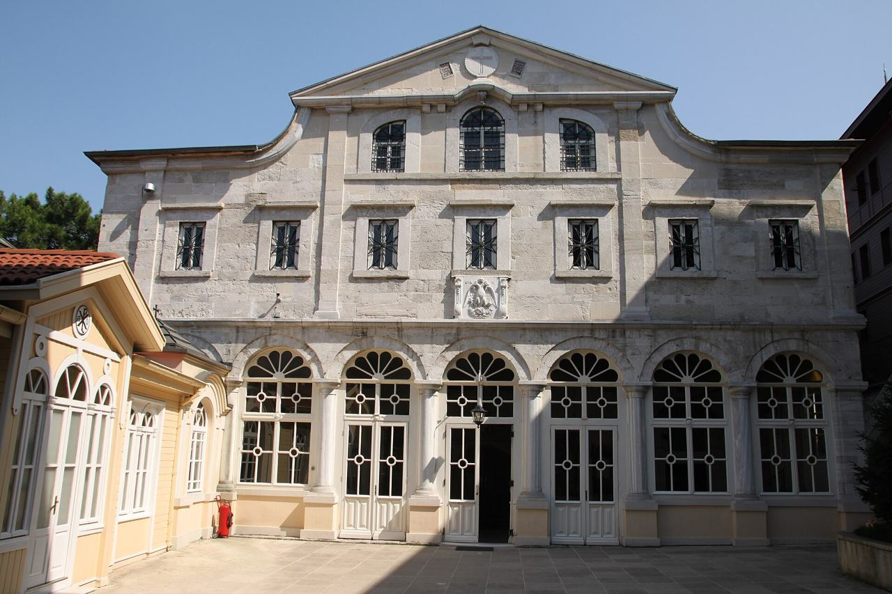
普世牧首区的圣乔治教堂。Klearchos Kapoutsis，CC BY 2.0。Church of St George at the Ecumenical Patriarchate. Klearchos Kapoutsis, CC BY 2.0.
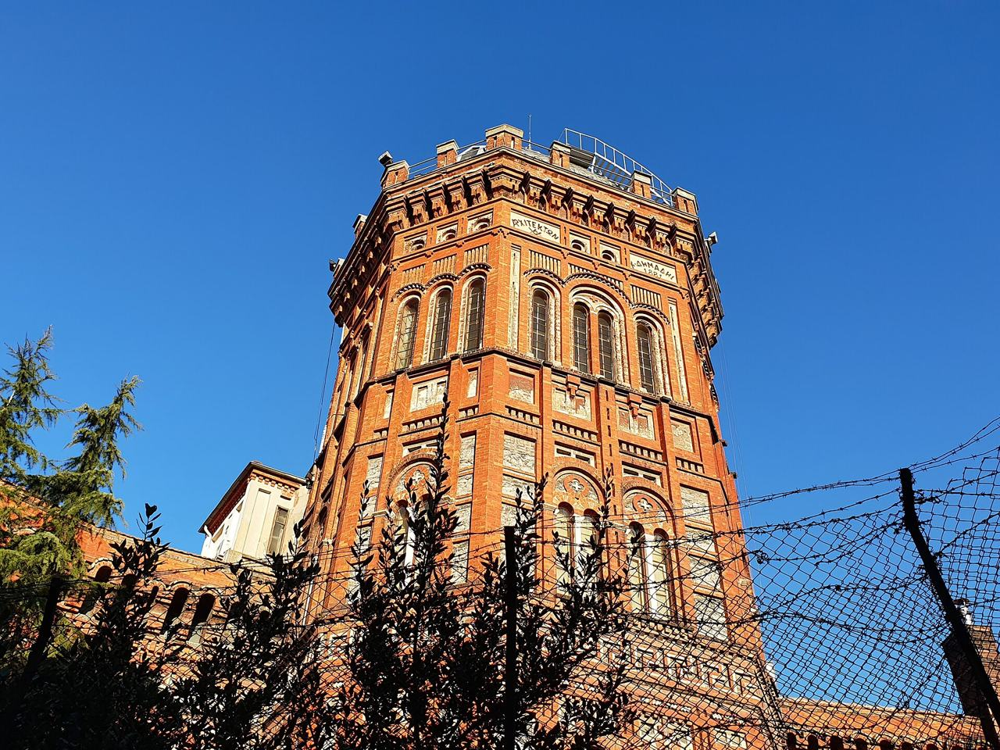
“红色城堡”：Fener Rum Lisesi。Antoloji，CC BY-SA 4.0。The "Red Castle": Fener Rum Lisesi. Antoloji, CC BY-SA 4.0.
详细讲解Detailed notes
背景Background
1453 年后，穆罕默德二世任命了新的东正教牧首，让他管理奥斯曼境内所有东正教徒的宗教和民事事务。这种按宗教群体自治的制度叫“米勒特”（millet），东正教徒群体的名字就叫 Rum milleti，“罗马人群体”。不管你是希腊人、保加利亚人还是塞尔维亚人，只要信东正教，在奥斯曼官方眼里就是“Rum”。After 1453 Mehmed II appointed a new Orthodox patriarch to run the religious and civil affairs of all Orthodox Christians in the empire. This system of self-governing religious communities is called the millet system, and the Orthodox community was named Rum milleti, "the Roman community". Greek, Bulgarian or Serbian, if you were Orthodox you were "Rum" in Ottoman eyes.
牧首区 1601 年迁到芬内尔的圣乔治教堂，一直留在这里。周边的希腊精英家族被称为“芬内尔人”（Phanariotes），为苏丹担任翻译和外交官，甚至被派去统治今天罗马尼亚境内的公国。1821 年希腊独立战争爆发，牧首格里高利五世在复活节当天被吊死在牧首区的正门上。此后这扇门一直焊死，再也没有打开过。The patriarchate moved to the Church of St George in Fener in 1601 and has stayed here ever since. The Greek elite families around it, the Phanariotes, served the sultan as interpreters and diplomats and were even sent to rule principalities in today's Romania. When the Greek War of Independence broke out in 1821, Patriarch Gregory V was hanged from the patriarchate's main gate on Easter Sunday. That gate has been welded shut ever since.
现场怎么找How to find it
牧首区在金角湾岸边的 Fener，围墙里就是圣乔治教堂，可以免费进去，衣着保守，保持安静。The patriarchate is in Fener on the Golden Horn; the Church of St George is inside the walls. Entry is free; dress modestly and keep quiet.
找那扇漆成深色、关着的中门，游客从旁边的侧门进出。Look for the dark-painted, closed middle gate; visitors use the side door next to it.
抬头看山坡上的红砖大楼，那就是 Fener Rum Lisesi（芬内尔希腊东正教学院），1880 年代建成，校名里就有“Rum”。Look up at the big red-brick building on the hill: Fener Rum Lisesi (the Phanar Greek Orthodox College), built in the 1880s, with "Rum" in its name.
在附近街道上留意招牌和铭牌：写着 “Rum Ortodoks” 的，就是“罗马东正教”。Watch the signs and plaques in nearby streets: "Rum Ortodoks" means "Roman Orthodox".
它说明了什么What it tells us
土耳其语里，“Yunan”指希腊这个国家和它的国民，“Rum”指世代生活在奥斯曼和土耳其境内的希腊东正教徒。也就是说，“罗马人”这个身份在这里一直延续到了 21 世纪，只是缩小成了一个宗教少数群体的名字。20 世纪的战争、1955 年的伊斯坦布尔骚乱和之后的驱逐，让城里的 Rum 社群从十多万人缩减到今天的几千人。In Turkish, "Yunan" means the country of Greece and its citizens, while "Rum" means the Greek Orthodox people who have lived for generations in the Ottoman Empire and Turkey. The identity "Roman" has continued here into the 21st century, shrunk into the name of a religious minority. 20th-century wars, the 1955 Istanbul riots and later expulsions reduced the city's Rum community from over 100,000 to a few thousand today.
想一想Think about it
如果“罗马人”的直系继承者今天还生活在这条街上，那 1453 年真的是罗马的终点吗？If the direct heirs of the "Romans" still live on this street today, was 1453 really the end of Rome?
突厥伊斯兰艺术博物馆（Day 1 可选）Museum of Turkish and Islamic Arts (Day 1, optional)
10. 罗姆苏丹国：突厥人自称的“罗马”10. The Sultanate of Rûm: the Turks' own "Rome"
在 1453 年之前将近四百年，突厥人就已经把自己的国家叫做“罗马”。Nearly four hundred years before 1453, Turks were already calling their own state "Rome".
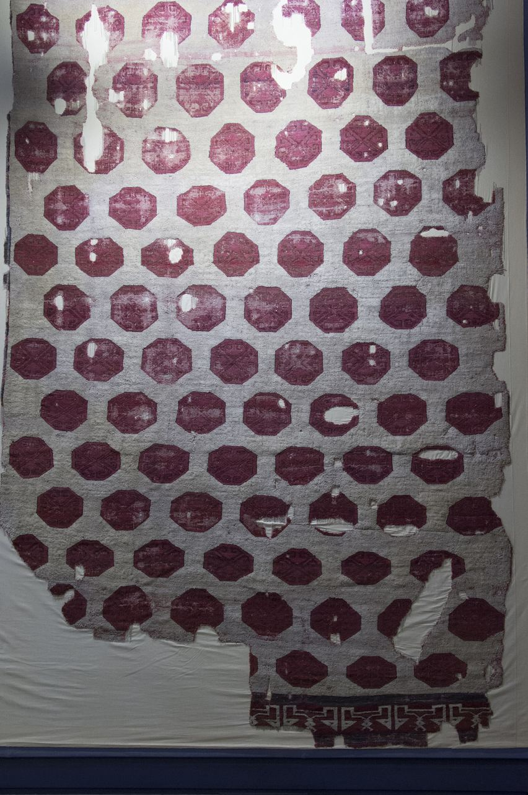
13 世纪塞尔柱时期的地毯，突厥伊斯兰艺术博物馆藏。Dosseman，CC BY-SA 4.0。13th-century Seljuk carpet, Museum of Turkish and Islamic Arts. Dosseman, CC BY-SA 4.0.
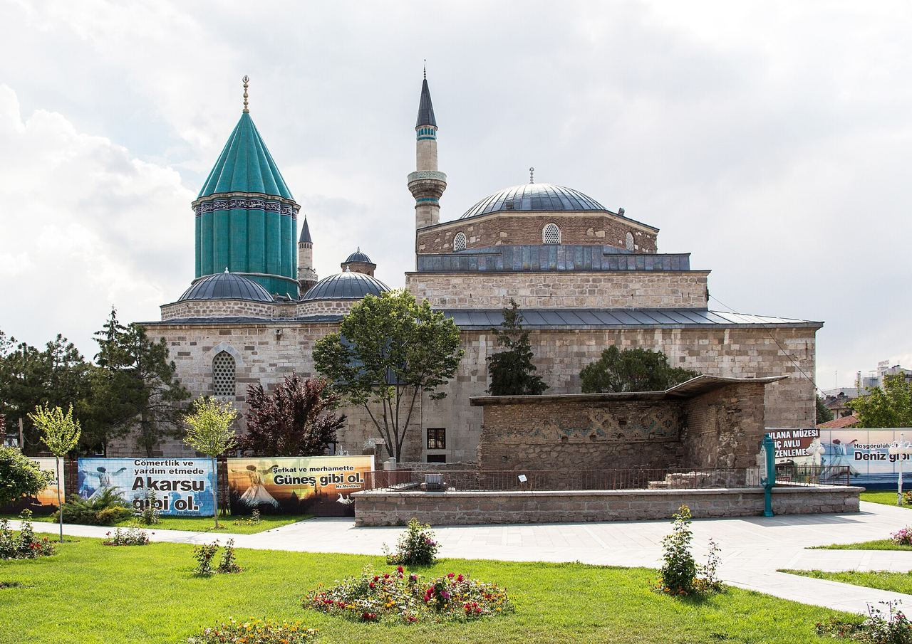
科尼亚的鲁米陵墓（梅夫拉纳博物馆），绿色锥顶下就是鲁米的墓。Bernard Gagnon，CC BY-SA 3.0。Rumi's mausoleum in Konya (Mevlana Museum); his tomb lies under the green cone. Bernard Gagnon, CC BY-SA 3.0.
详细讲解Detailed notes
背景Background
1071 年曼齐刻尔特之战后，塞尔柱家族的一支在安纳托利亚建立了自己的国家（1077–1308 年）。阿拉伯人和波斯人一向把拜占庭的土地叫“Rûm”，所以这个国家就成了“罗姆苏丹国”（Sultanate of Rûm）。第一个首都是尼西亚（伊兹尼克），1097 年第一次十字军夺走尼西亚后迁到科尼亚（Konya）。13 世纪初是它的黄金时代，宫廷说波斯语，建筑和艺术吸收了波斯、亚美尼亚和拜占庭工匠的手艺。After the Battle of Manzikert in 1071, a branch of the Seljuk family founded its own state in Anatolia (1077–1308). Arabs and Persians had always called Byzantine lands "Rûm", so it became the Sultanate of Rûm. Its first capital was Nicaea (İznik); after the First Crusade took Nicaea in 1097 it moved to Konya. Its golden age was the early 13th century: the court spoke Persian, and its architecture and art drew on Persian, Armenian and Byzantine craftsmen.
最有名的“罗马人”是诗人鲁米（Jalāl al-Dīn Rūmī，1207–1273）。他出生在中亚的巴尔赫一带（今阿富汗），小时候为躲避蒙古西征随父亲一路西迁，最后定居科尼亚。“Rumi”的意思就是“来自罗姆（罗马之地）的人”。一个中亚出生、用波斯语写诗的伊斯兰神秘主义者，名字叫“罗马人”。他的弟子创立了梅夫拉维教团，就是今天的旋转舞苦修僧。The most famous "Roman" is the poet Rumi (Jalāl al-Dīn Rūmī, 1207–1273). Born around Balkh in Central Asia (today's Afghanistan), he fled west with his father as a child to escape the Mongols and settled in Konya. "Rumi" means "the one from Rûm (the land of Rome)". A Central Asian-born Islamic mystic writing in Persian is named "the Roman". His followers founded the Mevlevi order, today's whirling dervishes.
现场怎么找How to find it
突厥伊斯兰艺术博物馆（赛车场西侧的易卜拉欣帕夏宫，约 €17，通票适用）：找 13 世纪的塞尔柱地毯。它们 1905 年在科尼亚的阿拉丁清真寺被发现，是现存最古老的土耳其打结地毯之一，几何图案和中亚的纺织传统一脉相承。Museum of Turkish and Islamic Arts (the İbrahim Pasha Palace on the west side of the Hippodrome, about €17, Museum Pass valid): look for the 13th-century Seljuk carpets. Found in 1905 in the Alaeddin Mosque in Konya, they are among the oldest surviving Turkish knotted carpets, their geometric patterns continuing Central Asian textile traditions.
同一个馆里还有塞尔柱时期的木雕、瓷砖和手抄本，留意说明牌上的 “Anatolian Seljuk” 字样。The same museum has Seljuk woodwork, tiles and manuscripts; look for "Anatolian Seljuk" on the labels.
延伸：Beyoğlu 的加拉塔梅夫拉维修道所（Galata Mevlevihanesi）是鲁米教团在伊斯坦布尔的据点，现为博物馆，部分日子有旋转舞仪式。城墙上的 Mevlanakapı（线索 1）也是因这个教团得名。Extra: the Galata Mevlevi Lodge (Galata Mevlevihanesi) in Beyoğlu was the order's base in Istanbul; now a museum with whirling ceremonies on some days. Mevlanakapı on the walls (clue 1) is also named after this order.
它说明了什么What it tells us
“罗马”这个名字在突厥人手里已经用了几百年。对中东和中亚的穆斯林来说，“Rûm”就是一个地理和文明的名称：拜占庭的地方。突厥人进入这片土地，也就继承了这个名字。The Turks had used the name "Rome" for centuries. For Muslims in the Middle East and Central Asia, "Rûm" was a geographic and civilisational name: the Byzantine lands. Entering those lands, the Turks inherited the name.
想一想Think about it
“罗马”在这里变成了一个地名，而不是一个民族。这算不算一种继承？Here "Rome" became a place name rather than a people. Does that count as inheritance?
埃于普苏丹清真寺（Day 4）Eyüp Sultan Mosque (Day 4)
11. 阿拉伯人第一次叩门11. The Arabs' first knock on the door
一位先知的同伴死在城下，八百年后成了奥斯曼最神圣的圣地。A Companion of the Prophet died below the walls; eight hundred years later his grave became the Ottomans' holiest shrine.
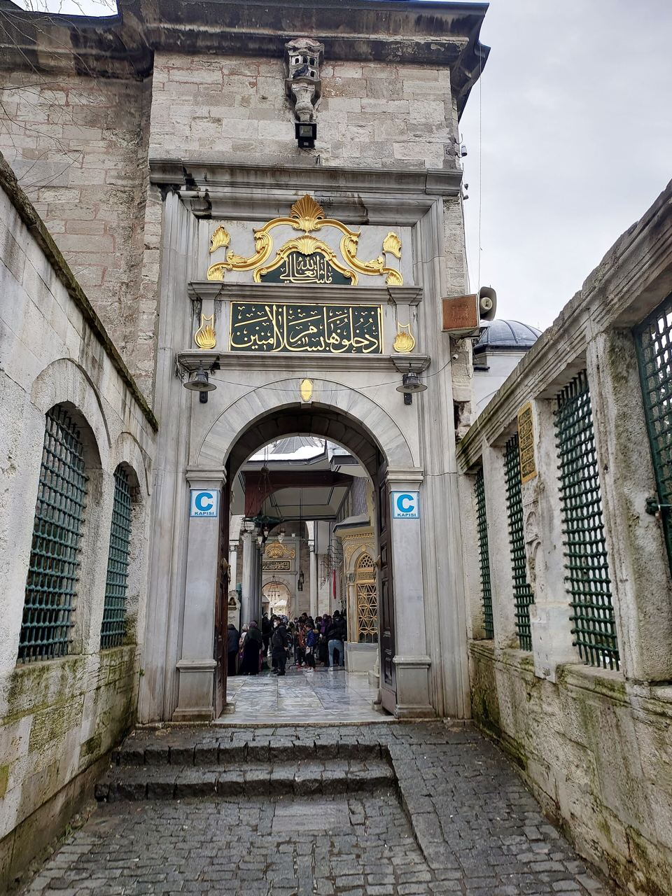
阿布·阿尤布陵墓的入口通道。Sureta，CC BY-SA 4.0。Entrance passage to Abu Ayyub's tomb. Sureta, CC BY-SA 4.0.
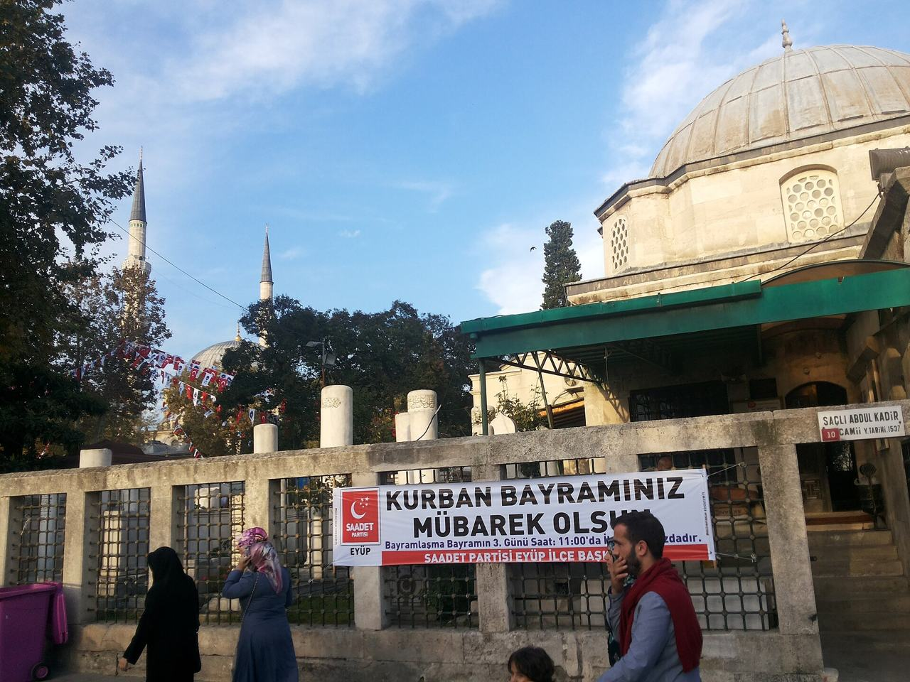
清真寺与庭院。Freedom's Falcon，CC BY-SA 3.0。The mosque and courtyard. Freedom's Falcon, CC BY-SA 3.0.
详细讲解Detailed notes
背景Background
阿布·阿尤布·安萨里（Abu Ayyub al-Ansari）是麦地那人。622 年先知穆罕默德从麦加迁到麦地那时，先住在他家里，所以他在穆斯林中地位很高。7 世纪 70 年代，倭马亚王朝派大军围攻君士坦丁堡，年事已高的他也随军出征，在城下病逝。传说他留下遗言，要求尽可能把他葬在离城墙最近的地方。Abu Ayyub al-Ansari was from Medina. When the Prophet Muhammad migrated from Mecca to Medina in 622, he first stayed in Abu Ayyub's house, which gave him great standing among Muslims. In the 670s the Umayyads sent a large army against Constantinople; the elderly Abu Ayyub joined it and died of illness below the walls. Tradition says he asked to be buried as close to the walls as possible.
阿拉伯人两次大规模围城（674–678 年、717–718 年）都失败了，拜占庭人靠的是城墙和一种能在海上燃烧的武器“希腊火”。伊斯兰传统中流传着一句归于先知的话：“你们必将征服君士坦丁堡，那位统帅是多么好的统帅，那支军队是多么好的军队。”这句话激励了一代又一代的围城者。Both great Arab sieges (674–678 and 717–718) failed; the Byzantines relied on the walls and "Greek fire", a weapon that burned even on water. A saying attributed to the Prophet circulated in Islamic tradition: "You will surely conquer Constantinople. What a fine commander its commander will be, and what a fine army that army will be." It inspired generation after generation of besiegers.
1453 年城破后，穆罕默德二世的精神导师阿克谢姆塞丁（Akşemseddin）宣布找到了阿布·阿尤布的墓。苏丹随即在这里建了陵墓和清真寺，这是攻城后在伊斯坦布尔建造的第一座清真寺。此后几百年，新苏丹即位时都要来这里佩剑，相当于登基仪式。After the city fell in 1453, Mehmed II's spiritual teacher Akşemseddin announced that he had found Abu Ayyub's grave. The sultan immediately built a tomb and mosque here, the first mosque built in Istanbul after the conquest. For centuries afterwards each new sultan came here to be girded with a sword, the Ottoman equivalent of a coronation.
现场怎么找How to find it
从金角湾码头上岸，或坐公交到 Eyüp。清真寺庭院里有一棵老悬铃木，陵墓入口在庭院一侧，墙上贴满了伊兹尼克瓷砖，排队的多是来祈祷的本地人。Come by Golden Horn ferry or by bus to Eyüp. There is an old plane tree in the mosque courtyard; the tomb entrance, its walls covered in İznik tiles, is on one side, usually with a line of local people coming to pray.
保持安静，女生戴头巾。周末常能看到穿白色和金色礼服的小男孩，他们是来这里祈福后接受割礼的，这是当地的传统。Keep quiet; women cover their hair. At weekends you often see little boys in white and gold costumes: they come here for blessings before their circumcision, a local tradition.
清真寺后面的山坡是一大片奥斯曼墓地，墓碑顶上雕着头巾或帽子，帽子的样式代表墓主的身份。一路往上走就是 Pierre Loti 山顶。The hillside behind the mosque is a large Ottoman cemetery. Gravestones are topped with carved turbans or hats whose style shows the deceased's rank. Keep climbing and you reach Pierre Loti Hill.
它说明了什么What it tells us
伊斯兰世界对“罗马之城”的渴望，从 7 世纪就开始了，比突厥人到来早了四百年。奥斯曼人把自己放进了这条长长的故事线：1453 年是完成先知同伴未竟的事业。“征服罗马”这个目标，本身就是奥斯曼合法性的一部分。The Islamic world's longing for the "city of Rome" began in the 7th century, four hundred years before the Turks arrived. The Ottomans placed themselves in this long story: 1453 completed the unfinished work of the Prophet's Companion. "Conquering Rome" was itself part of Ottoman legitimacy.
想一想Think about it
同一座城，对拜占庭人来说是“神所守护的城”，对穆斯林来说是“先知预言要征服的城”。两种叙事都需要它是“罗马”。To the Byzantines this was "the God-guarded city"; to Muslims, "the city the Prophet foretold would be conquered". Both stories need it to be "Rome".
12. 清真寺长成了圣索菲亚的样子12. Mosques that grew into the shape of Hagia Sophia
奥斯曼建筑师用了一百年，和查士丁尼的穹顶较劲。Ottoman architects spent a century competing with Justinian's dome.
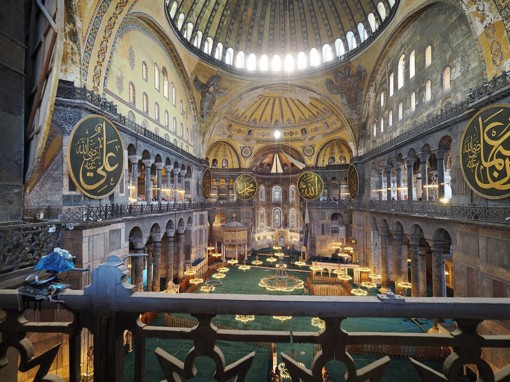
圣索菲亚：537 年。Arnoldius，CC BY-SA 4.0。Hagia Sophia: 537. Arnoldius, CC BY-SA 4.0.
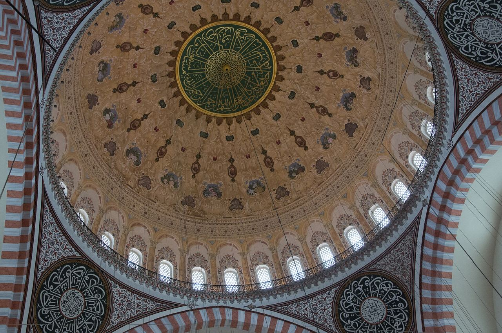
苏莱曼尼耶：1557 年。Dosseman，CC BY-SA 4.0。Süleymaniye: 1557. Dosseman, CC BY-SA 4.0.
详细讲解Detailed notes
背景Background
1453 年以前，奥斯曼的清真寺多是小穹顶或多穹顶的建筑，比如布尔萨的大清真寺。进入君士坦丁堡后，他们每天都面对着圣索菲亚：一个直径约 31 米、高约 55 米、看上去“悬在空中”的穹顶。此后的奥斯曼皇家清真寺几乎都采用了它的思路：一个中央大穹顶，前后用半穹顶撑开空间。Before 1453, Ottoman mosques mostly had small domes or many domes, like the Great Mosque of Bursa. In Constantinople they faced Hagia Sophia every day: a dome about 31 m across and 55 m high that seems to float in the air. Almost every later imperial Ottoman mosque adopted its idea: a central great dome, with half-domes opening the space front and back.
把这个思路推到极致的是建筑师希南（Mimar Sinan，约 1490–1588）。他出生在开塞利附近的一个基督徒家庭，通过“德夫希尔梅”（devşirme，奥斯曼从基督徒臣民中征召男孩培养成军人和官员的制度）进入宫廷，先当近卫军的军事工程师，后来成为帝国首席建筑师，一生设计了三百多座建筑。他自己把作品分成三个阶段：伊斯坦布尔的王子清真寺是“学徒作”，苏莱曼尼耶是“熟练作”，埃迪尔内的塞利米耶清真寺是“大师作”。在塞利米耶，他终于让穹顶直径和圣索菲亚不相上下。The architect who pushed this idea furthest was Mimar Sinan (c. 1490–1588). Born into a Christian family near Kayseri, he entered imperial service through the devşirme (the Ottoman levy of boys from Christian subjects, trained as soldiers and officials), served as a Janissary military engineer and became chief imperial architect, designing over three hundred buildings. He divided his own work into three stages: the Şehzade Mosque in Istanbul was his "apprentice work", Süleymaniye his "journeyman work", and the Selimiye in Edirne his "masterpiece". At the Selimiye he finally matched Hagia Sophia's dome diameter.
现场怎么比How to compare on site
在圣索菲亚：注意楼上画廊和底层被柱廊分隔开，空间有很多层次和阴影，光线从穹顶底部一圈 40 扇窗射进来。再看后殿：伊斯兰的礼拜龛（mihrab）明显偏离了后殿的中轴线，因为教堂朝向东方，而礼拜要朝向麦加（东南方）。这是“改建”留下的痕迹。In Hagia Sophia: notice how galleries and colonnades divide the space into layers and shadows, with light pouring in through the ring of 40 windows at the base of the dome. Then look at the apse: the Islamic prayer niche (mihrab) is clearly off the apse's central axis, because the church faces east while prayer faces Mecca (southeast). It is a trace of conversion.
在苏莱曼尼耶：站在正中央。空间几乎没有遮挡，从任何位置都能看到礼拜龛和讲经台，这是为了让成千上万的人一起礼拜。光线更均匀，墙更薄，窗更多。礼拜龛正对着中轴线，因为整座建筑从一开始就是朝着麦加设计的。In Süleymaniye: stand in the very centre. The space is almost unobstructed; the mihrab and pulpit are visible from everywhere, so thousands can pray together. The light is more even, the walls thinner, the windows more numerous. The mihrab sits exactly on the central axis, because the whole building was designed to face Mecca from the start.
苏莱曼尼耶的四根巨大花岗岩柱，传统说法是从城内旧宫殿和其他古城运来的，属于 spolia（支线 A）。Süleymaniye's four giant granite columns are traditionally said to have come from old palaces in the city and other ancient cities: spolia (side quest A).
出门后去后院找苏莱曼和许蕾姆的陵墓，再去清真寺外的街角找希南自己那座朴素的小陵墓。Afterwards, find the tombs of Süleyman and Hürrem in the rear garden, then Sinan's own modest tomb on the street corner outside the mosque.
它说明了什么What it tells us
拜占庭没有以“遗迹”的形式活下来，而是以“建筑语言”的形式活进了奥斯曼。圣索菲亚定下了标准，奥斯曼建筑师在它的基础上做出了适合伊斯兰礼拜的新空间。一个出身基督徒家庭的建筑师，替穆斯林苏丹回应了一位基督教皇帝的建筑挑战。Byzantium survived not as ruins but as an architectural language living on inside Ottoman buildings. Hagia Sophia set the standard; Ottoman architects built on it to create new spaces suited to Islamic prayer. An architect born into a Christian family answered, on behalf of a Muslim sultan, the architectural challenge of a Christian emperor.
想一想Think about it
这是你最后一条线索。回到“研究笔记”：如果一个文明的语言、宗教、统治者都换了，但它的城市骨架、建筑语言、地名、甚至“罗马”这个名字都被接了过去，你会怎么描述 1453 年发生的事？This is your last clue. Go back to the research notes: if a civilisation's language, religion and rulers all changed, but its urban skeleton, architectural language, place names and even the name "Rome" were all taken over, how would you describe what happened in 1453?
研究笔记Research notes
写下你的观察和结论。只保存在这台设备的浏览器里，换手机看不到。Write down your observations and conclusion. Saved only in this device's browser; you won't see it on another phone.
支线任务Side quests
A. Spolia 猎人 Spolia HunterA. Spolia Hunter
Spolia 指从旧建筑拆下来再利用的石料。伊斯坦布尔到处都是：Spolia are stones taken from older buildings and reused. Istanbul is full of them:
地下水宫里倒放、侧放的两颗美杜莎头像（原属某座罗马建筑，被当柱础）。The two Medusa heads in the Basilica Cistern, one upside down and one on its side (from some Roman building, reused as column bases).
赛车场的埃及方尖碑（图特摩斯三世时代，390 年运来）和蛇柱（前 479 年希腊人为纪念普拉提亚战役在德尔斐铸造）。The Hippodrome's Egyptian obelisk (Thutmose III, brought in 390) and the Serpent Column (cast at Delphi in 479 BC to commemorate the Battle of Plataea).
苏莱曼尼耶清真寺里的四根巨柱，据说来自城内旧宫殿和更远的古城。The four giant columns in the Süleymaniye Mosque, said to come from old palaces in the city and more distant ancient cities.
城墙上：留意砌进墙里的带字石块、雕花柱头、倒置的大理石。On the walls: watch for inscribed blocks, carved capitals and upside-down marble built into the masonry.
B. 1453 之路B. The 1453 Trail
按攻城顺序走：Rumeli Hisarı（1452 年封锁海峡）→ 卡瑟姆帕夏一带（奥斯曼舰船被从陆路拖进金角湾）→ 城墙圣罗曼努斯门 / Topkapı 门（主要突破口，附近有 Panorama 1453 全景博物馆）→ 圣索菲亚（5 月 29 日穆罕默德入城后来到这里）→ 法提赫清真寺（他的陵墓）。Follow the siege in order: Rumeli Hisarı (closing the strait in 1452) → the Kasımpaşa area (Ottoman ships hauled overland into the Golden Horn) → the Gate of St Romanus / Topkapı gate on the walls (main breach, with the Panorama 1453 museum nearby) → Hagia Sophia (where Mehmed came after entering the city on 29 May) → Fatih Mosque (his tomb).
C. 吃出五层历史C. Eat five layers of history
4 天里每层至少吃一样：希腊—拜占庭层（鱼、橄榄油菜、simit）、突厥草原层（酸奶、mantı、boza）、波斯—阿拉伯层（抓饭、咖啡、果子露）、奥斯曼宫廷层（baklava、hünkar beğendi）、现代街头层（döner、balık ekmek）。详见“美食”。In four days, eat at least one thing from each layer: Greek–Byzantine (fish, olive-oil dishes, simit), Turkic steppe (yoghurt, mantı, boza), Persian–Arab (pilaf, coffee, sherbet), Ottoman palace (baklava, hünkar beğendi), modern street (döner, balık ekmek). See "Food".
Itinerary
4 天行程4-Day Plan
按区域安排，尽量少走回头路。标了可选的累了就跳过。Arranged by area to minimise backtracking. Skip anything marked optional if you're tired.
闭馆日：托普卡帕宫周二闭馆；多尔玛巴赫切宫周一闭馆；所有清真寺周五约 12:00–14:30 不接待游客。按你实际的星期几调换 Day 2 和 Day 4。Closing days: Topkapı Palace is closed on Tuesdays; Dolmabahçe Palace on Mondays; all mosques close to visitors on Fridays around 12:00–14:30. Swap Day 2 and Day 4 to match your actual weekdays.
圣索菲亚，开门就进，游客走东北侧入口上楼上画廊。1.5 小时，找线索 2、3、4。Hagia Sophia at opening time; visitors use the northeast entrance to the upper gallery. 1.5 hours, clues 2, 3, 4.
突厥伊斯兰艺术博物馆，就在赛车场边的易卜拉欣帕夏宫里，线索 10。可选Museum of Turkish and Islamic Arts, in the İbrahim Pasha Palace beside the Hippodrome; clue 10. optional
16:30
往南走下坡到小圣索菲亚，看墙上的希腊文铭文带，再沿海墙走到布科莱昂宫遗址看日落。可选Walk downhill south to Little Hagia Sophia to see the Greek inscription frieze, then follow the sea walls to the Boukoleon Palace ruins at sunset. optional
晚上Evening
Kumkapı 的海鲜 meyhane 一条街（游客化，但氛围在），或回 Sultanahmet 早睡。The seafood meyhane street in Kumkapı (touristy but atmospheric), or an early night in Sultanahmet.
托普卡帕宫，买含后宫和圣伊琳娜的联票。先进后宫（人少），再按庭院顺序走。3–3.5 小时，线索 6。别错过御膳房里的中国瓷器。Topkapı Palace: buy the combined ticket with the Harem and Hagia Irene. Do the Harem first (fewer people), then go court by court. 3–3.5 hours, clue 6. Don't miss the Chinese porcelain in the palace kitchens.
12:45
出宫后在居尔哈内公园旁吃午饭。Lunch near Gülhane Park after leaving the palace.
13:45
伊斯坦布尔考古博物馆：亚历山大石棺、拜占庭石刻、蛇柱的一颗蛇头。可选Istanbul Archaeology Museums: Alexander Sarcophagus, Byzantine sculpture, a head from the Serpent Column. optional
15:00
坐电车到 Eminönü：Hacı Bekir 软糖（1777）、香料市场、Kurukahveci Mehmet Efendi 咖啡（1871）、吕斯泰姆帕夏清真寺的伊兹尼克瓷砖。Tram to Eminönü: Hacı Bekir Turkish delight (1777), the Spice Bazaar, Kurukahveci Mehmet Efendi coffee (1871), and the İznik tiles of the Rüstem Pasha Mosque.
16:30
码头吃 balık ekmek（烤鱼三明治）。Balık ekmek (grilled fish sandwich) at the waterfront.
17:15
上坡到苏莱曼尼耶清真寺，日落时从后院俯瞰金角湾。线索 12。Climb up to the Süleymaniye Mosque and watch the sunset over the Golden Horn from the rear terrace. Clue 12.
19:00
步行 10 分钟到 Vefa Bozacısı（1876）喝 boza，回程看夜里的瓦伦斯水道桥。Walk 10 minutes to Vefa Bozacısı (1876) for boza; see the Aqueduct of Valens lit up on the way back.
DAY 3
陆墙远征：从征服者之墓到金门Land Walls expedition: from the Conqueror's tomb to the Golden Gate
半天徒步约 5 公里 · 线索 1、7Half-day walk, about 5 km · clues 1, 7
08:30
法提赫清真寺和穆罕默德二世陵墓。线索 7。Fatih Mosque and Mehmed II's tomb. Clue 7.
09:30
打车或坐公交到 Edirnekapı，参观卡里耶 / 柯拉（Chora）。看完全城最好的拜占庭晚期马赛克和壁画。1 小时。Taxi or bus to Edirnekapı to visit Kariye / Chora, the city's finest late Byzantine mosaics and frescoes. 1 hour.
11:00
看看希南设计的米赫丽玛苏丹清真寺，从 Edirnekapı 开始沿城墙往南走。See Sinan's Mihrimah Sultan Mosque, then start walking south along the walls from Edirnekapı.
12:00
Topkapı 门一带（1453 年主要突破口），午饭；Panorama 1453 全景博物馆。可选The Topkapı gate area (main breach in 1453), lunch; Panorama 1453 museum. optional
13:30
Mevlanakapı：找拉丁文铭文（线索 1）→ Silivrikapı，绕到城外的巴勒克勒圣泉修道院（Zoodochos Pege）。Mevlanakapı: find the Latin inscription (clue 1) → Silivrikapı, with a detour outside the walls to the Balıklı monastery of the Life-giving Spring (Zoodochos Pege).
15:30
Belgradkapı → 耶迪库勒 / 金门。城外的蔬菜田（bostan）是拜占庭时期延续至今的城郊菜园。Belgradkapı → Yedikule / Golden Gate. The vegetable gardens (bostan) outside the walls are suburban market gardens continuing since Byzantine times.
16:30
从 Kazlıçeşme 或 Yedikule 站坐 Marmaray 回市区。详细路线看“城墙远征”。Take the Marmaray back from Kazlıçeşme or Yedikule station. Full route in "Walls".
埃于普苏丹清真寺（线索 11）。想看金角湾全景可坐缆车上 Pierre Loti 山。可选Eyüp Sultan Mosque (clue 11). For a Golden Horn panorama, take the cable car up Pierre Loti Hill. optional
10:30
到 Ayvansaray：城墙北端、布拉赫奈宫一带，参观泰克弗尔宫博物馆（Tekfur Sarayı）。To Ayvansaray: the north end of the walls, around the Blachernae palace; visit the Tekfur Sarayı Museum.
12:00
步行进 Balat 和 Fener：普世牧首区、红色城堡学校（线索 9）、保加利亚铁教堂。在 Balat 吃午饭。Walk into Balat and Fener: the Ecumenical Patriarchate, the "Red Castle" school (clue 9), the Bulgarian iron church. Lunch in Balat.
14:30
到 Karaköy：阿拉伯清真寺（热那亚人的哥特式教堂改建）、加拉塔塔。可选To Karaköy: the Arap Mosque (a converted Genoese Gothic church) and Galata Tower. optional
15:30
多尔玛巴赫切宫，看完和托普卡帕对比。或者改坐公营渡轮短途游博斯普鲁斯，从海上看 Rumeli Hisarı（线索 8）。Dolmabahçe Palace, to compare with Topkapı. Or take the public short Bosphorus ferry instead and see Rumeli Hisarı from the water (clue 8).
晚上Evening
坐渡轮去亚洲岸 Kadıköy，在 Çiya Sofrası 吃安纳托利亚各地菜，顺便吃一顿“跨洲”的晚饭。Ferry to Kadıköy on the Asian side and eat dishes from all over Anatolia at Çiya Sofrası: a dinner across continents.
另外 2 天露营：伊斯坦布尔北部的贝尔格莱德森林（Belgrad Ormanı）、黑海岸边的 Şile / Kilyos 一带是常见去处。具体营地是否允许过夜要提前确认。夜间气温会比市区低不少，保暖装备见“实用”。The other 2 days of camping: the Belgrad Forest north of Istanbul and the Black Sea coast around Şile / Kilyos are common choices. Check in advance whether overnight camping is allowed at a given site. Nights are much colder than in the city; see "Practical" for warm gear.
Sites
必去遗迹Must-see sites
标签：拜占庭奥斯曼主线线索。票价为外国游客价，2026 年 8–9 月数据，现场为准。Tags: ByzantineOttomanQuest clue. Prices are for foreign visitors, Aug–Sep 2026; check on site.
一、拜占庭（东罗马）I. Byzantine (Eastern Roman)
拜占庭奥斯曼线索 2·3·4·12ByzantineOttomanClues 2·3·4·12
圣索菲亚 Hagia Sophia · AyasofyaHagia Sophia Ayasofya
中殿与大穹顶。今天游客只能在楼上画廊俯瞰这个空间。Arnoldius，CC BY-SA 4.0。The nave and great dome. Today visitors can only look down on this space from the upper gallery. Arnoldius, CC BY-SA 4.0.
历史：今天的建筑是第三座同名教堂。532 年尼卡暴动（Nika riots）烧毁了前一座，查士丁尼一世（Justinian I）命数学家安提米乌斯（Anthemius of Tralles）和伊西多尔（Isidore of Miletus）重建，537 年落成，直径约 31 米的穹顶让它在近千年里都是世界最大的教堂。558 年地震震塌穹顶，重建后加高。1204 年十字军洗劫，1453 年改为清真寺，加建宣礼塔；1934 年凯末尔政府改为博物馆；2020 年又改回清真寺。History: today's building is the third church of this name. The Nika riots of 532 burned the previous one, and Justinian I had the mathematicians Anthemius of Tralles and Isidore of Miletus rebuild it. Completed in 537, its dome of about 31 m made it the world's largest church for nearly a thousand years. An earthquake brought the dome down in 558; it was rebuilt higher. Sacked by crusaders in 1204, made a mosque with minarets in 1453, turned into a museum by Atatürk's government in 1934, and made a mosque again in 2020.
怎么进Entry
游客从东北侧（靠托普卡帕宫方向）的游客入口进，只能上楼上画廊；一楼供礼拜。Visitors enter through the tourist entrance on the northeast side (towards Topkapı Palace) and may only go to the upper gallery; the ground floor is for worship.
票价Ticket
€25；博物馆通票（Museum Pass）不适用。€25; the Museum Pass is not valid.
时间Hours
约 09:00–19:00；五次礼拜时段及周五 12:00–14:30 不接待游客。About 09:00–19:00; closed to visitors during the five daily prayers and on Fridays 12:00–14:30.
着装Dress
遮住肩膀和膝盖，女生戴头巾（入口有提供），脱鞋。Cover shoulders and knees; women cover their hair (scarves provided at the entrance); shoes off.
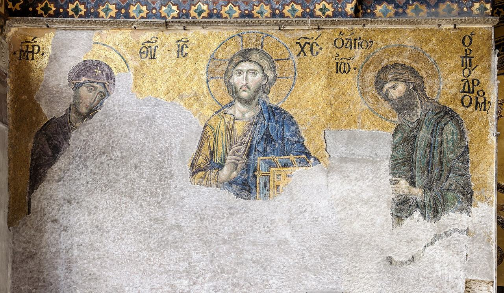
南画廊的德西斯马赛克（约 1261 年），基督两侧是圣母和施洗约翰。公有领域。The Deësis mosaic in the south gallery (c. 1261): the Virgin and John the Baptist on either side of Christ. Public domain.西南入口马赛克（10 世纪）：左查士丁尼献教堂，右君士坦丁献城市。公有领域。Southwest entrance mosaic (10th century): Justinian offers the church (left), Constantine the city (right). Public domain.
现场找什么：楼上画廊 7 个看点按参观顺序排列。点图片可以放大。What to look for: 7 highlights in the upper galleryIn visiting order. Tap a picture to enlarge.
1. 德西斯马赛克 Deësis1. Deësis mosaic
约 1261 年，拜占庭人从十字军手里收复君士坦丁堡后不久完成。基督居中，左边是圣母，右边是施洗约翰，两人侧身为人类向基督求情（“Deësis”就是“祈求”的意思）。下半部分已经剥落，但三张脸的明暗过渡极其细腻，被认为是拜占庭马赛克的巅峰。Completed around 1261, soon after the Byzantines recaptured Constantinople from the crusaders. Christ in the centre, the Virgin on the left and John the Baptist on the right, both turning to intercede with Christ for humanity ("Deësis" means "supplication"). The lower half has flaked away, but the subtle modelling of the three faces is considered the summit of Byzantine mosaic art.
位置：南画廊中段墙面Where: mid-wall of the south gallery
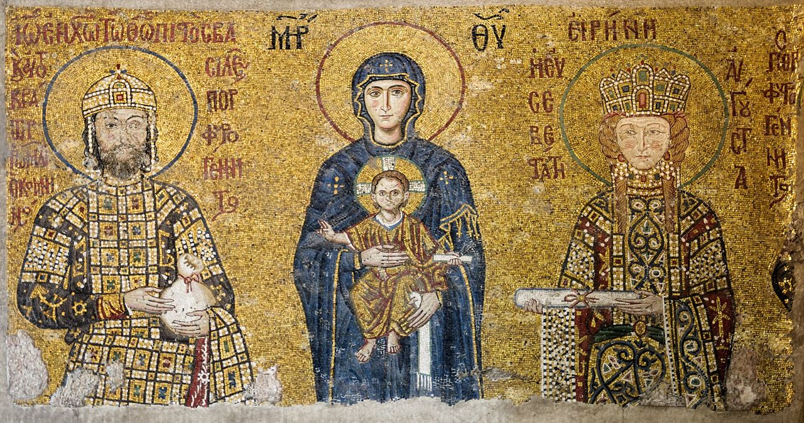
2. 科穆宁皇帝马赛克 Komnenos Mosaic2. Komnenos mosaic
约 1122 年。皇帝约翰二世·科穆宁（左）和匈牙利出身的皇后伊琳娜（右）站在圣母子两侧，皇帝捧着钱袋，皇后捧着卷轴，表示向教堂捐献。皇帝头顶的金色铭文里能读到 ΒΑΣΙΛΕΥΣ（皇帝）和“罗马人的”（主线线索 2）。他们的儿子阿莱克修斯画在旁边的墙柱上。c. 1122. Emperor John II Komnenos (left) and his Hungarian-born empress Irene (right) flank the Virgin and Child; he holds a purse and she a scroll, gifts to the church. In the gold inscription above the emperor you can read ΒΑΣΙΛΕΥΣ (emperor) and "of the Romans" (quest clue 2). Their son Alexios is shown on the adjoining pier.
位置：南画廊东端尽头。2026 年 7 月有报道说这里一幅圣母子马赛克被白色帘子遮住了一部分，很可能就是这一幅，可以从帘子后面看。Where: the far east end of the south gallery. A July 2026 report said a Virgin and Child mosaic here was partly behind a white curtain, most likely this one; you can view it from behind the curtain.
3. 佐伊女皇马赛克 Zoe Mosaic3. Zoe mosaic
11 世纪。基督居中，左边是皇帝君士坦丁九世，右边是女皇佐伊。佐伊一生嫁了三任皇帝，男皇帝的脸和名字铭文都有明显修改的痕迹，学者普遍认为最初画的是她的第一任丈夫。皇帝头顶写着“在基督神里，忠信的罗马人的皇帝”，在这里找 ΡΩΜΑΙΩΝ，完成主线线索 2。11th century. Christ in the centre, Emperor Constantine IX on the left, Empress Zoe on the right. Zoe married three emperors, and the man's face and name inscription show clear signs of alteration; scholars generally think it first showed her first husband. Above the emperor it reads "in Christ God, faithful emperor of the Romans": find ΡΩΜΑΙΩΝ here to complete quest clue 2.
位置：紧挨科穆宁马赛克，南画廊东墙Where: next to the Komnenos mosaic, east wall of the south gallery
4. 丹多洛墓碑 Henricus Dandolo4. Tomb slab of Henricus Dandolo
威尼斯总督恩里科·丹多洛领导第四次十字军，在 1204 年攻陷并洗劫了君士坦丁堡，1205 年死在这里，葬在圣索菲亚。现在这块刻字石板一般认为是 19 世纪修复时放的纪念标记，原墓很可能在 1453 年后就被毁了（主线线索 3）。Doge Enrico Dandolo of Venice led the Fourth Crusade that captured and sacked Constantinople in 1204; he died here in 1205 and was buried in Hagia Sophia. The inscribed slab is generally thought to be a 19th-century marker from the restoration; the original tomb was probably destroyed after 1453 (quest clue 3).
位置：南画廊地面，离德西斯马赛克不远。低头找。Where: on the floor of the south gallery, not far from the Deësis. Look down.
5. 维京如尼文 Halfdan Runes5. Halfdan's runes
大约 9 世纪，一个叫 Halfdan 的北欧人在栏杆上刻了自己的名字，可能是拜占庭皇帝的瓦兰吉卫队成员。1964 年才被发现，后来在另一侧画廊又找到了第二处如尼文（主线线索 4）。Around the 9th century a Norseman named Halfdan carved his name on the balustrade, possibly a member of the emperor's Varangian Guard. It was only discovered in 1964; a second runic graffito was later found in another gallery (quest clue 4).
位置：楼上画廊靠中殿一侧的大理石栏杆顶面，通常有透明罩。刻痕很浅，用手机手电筒从侧面照。Where: on top of the marble balustrade on the nave side of the upper gallery, usually under a transparent cover. The scratches are shallow; light them from the side with your phone torch.
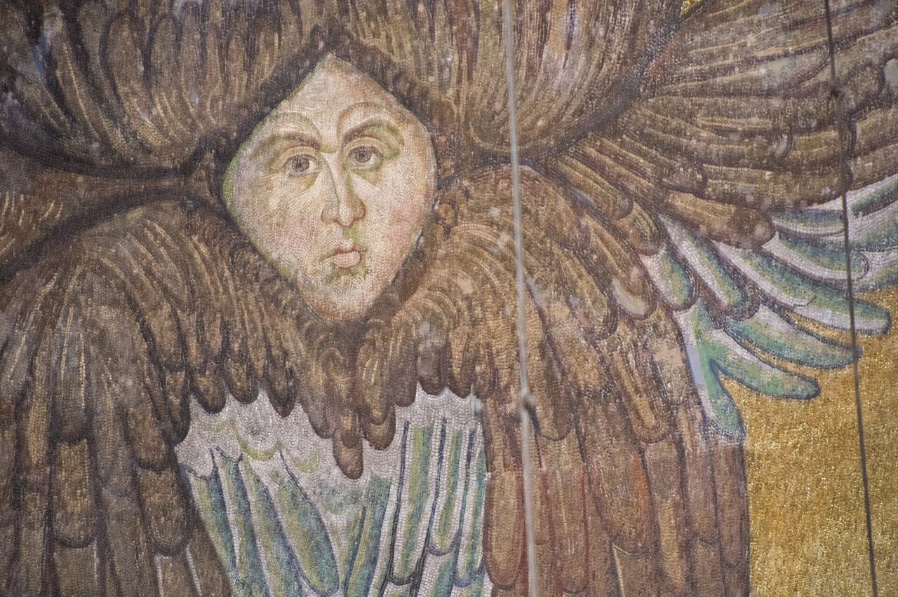
6. 穹隅上的六翼天使 Seraphim6. Seraphim on the pendentives
圆形穹顶要架在方形的四根大柱上，中间靠四块弧形三角面过渡，这就是“穹隅”（pendentive），是拜占庭建筑最关键的发明之一。四个穹隅上各有一位六翼天使。奥斯曼时期天使的脸被金属星形盖片遮住，2009 年修复时其中一张脸重新露了出来，就是图里这张。A round dome has to sit on four great square piers, with four curved triangular surfaces making the transition: these are pendentives, one of the key inventions of Byzantine architecture. Each pendentive carries a six-winged seraph. In the Ottoman period the angels' faces were covered with metal star-shaped plates; one face was uncovered again in the 2009 restoration, the one in this picture.
位置：抬头看主穹顶下方的四个角。目前穹顶区域在加固施工，可能被脚手架或帆布挡住。Where: look up at the four corners below the main dome. The dome area is currently under structural works and may be hidden by scaffolding or canvas.
中殿四周挂着八块直径约 7.5 米的圆形木牌，是 19 世纪中叶苏丹阿卜杜勒迈吉德请瑞士建筑师福萨蒂修复圣索菲亚时，由书法家穆斯塔法·伊扎特（Kazasker Mustafa İzzet Efendi）书写的。上面是安拉、先知穆罕默德、四大哈里发和先知的两个外孙的名字。图里从左到右：穆罕默德、安拉、阿布·伯克尔。站在画廊上，金色马赛克和阿拉伯书法同在一个画面里，这是两个帝国叠在一起最直观的样子。Eight round wooden panels about 7.5 m across hang around the nave. They were written by the calligrapher Kazasker Mustafa İzzet Efendi in the mid-19th century, when Sultan Abdülmecid had the Swiss architect Fossati restore Hagia Sophia. They bear the names of Allah, the Prophet Muhammad, the four caliphs and the Prophet's two grandsons. In the picture, left to right: Muhammad, Allah, Abu Bakr. From the gallery, gold mosaics and Arabic calligraphy share one view: the most direct image of two empires layered together.
位置：挂在中殿四周的高处，从楼上画廊往中殿方向看最清楚。Where: high around the nave; best seen from the upper gallery looking towards the nave.
楼上画廊地板上的 HENRICUS DANDOLO 墓碑（主线线索 3）。Myrabella，CC BY-SA 3.0。The HENRICUS DANDOLO slab in the upper gallery floor (quest clue 3). Myrabella, CC BY-SA 3.0.
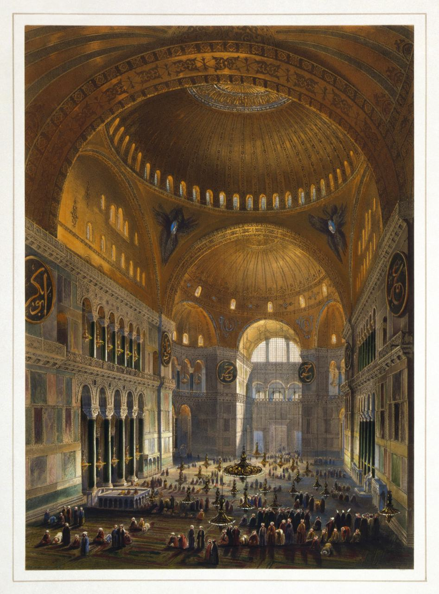
1852 年福萨蒂（Gaspare Fossati）修复后出版的石版画，可以和你在画廊上看到的场景对比。公有领域。Lithograph published after Gaspare Fossati's restoration (1852); compare it with what you see from the gallery. Public domain.
狄奥多西方尖碑底座：皇帝在包厢里看比赛。Ian Scott，CC BY-SA 2.0。Base of the Obelisk of Theodosius: the emperor watching the races from his box. Ian Scott, CC BY-SA 2.0.
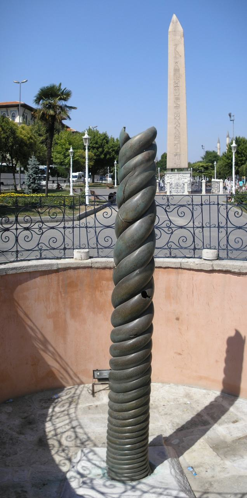
蛇柱，原立于德尔斐，前 479 年铸造。公有领域。The Serpent Column, originally at Delphi, cast in 479 BC. Public domain.
历史：203 年罗马皇帝塞维鲁开建，君士坦丁扩建成可容纳约 10 万人的赛车场，与皇宫直接相连。比赛分“蓝党”“绿党”，532 年两党联合暴动（尼卡暴动），查士丁尼在这里镇压，据称死者约 3 万。今天的广场完全沿着跑道的中轴线（spina）展开：埃及方尖碑、蛇柱、砌筑方尖碑（Walled Obelisk）排成一列，那就是当年赛道中间的分隔带。History: begun by Emperor Septimius Severus in 203 and enlarged by Constantine into a hippodrome for about 100,000 people, directly linked to the palace. Racing was split between the Blues and the Greens; in 532 the two factions rose together (the Nika riots) and Justinian crushed them here, reportedly killing about 30,000. Today's square runs exactly along the track's central axis (spina): the Egyptian obelisk, Serpent Column and Walled Obelisk stand in a row on what was the barrier in the middle of the track.
费用Cost
免费，随时可去。Free, open any time.
小贴士Tip
方尖碑底座比地面低，因为一千多年来地面抬高了约 2 米。The obelisk base sits below street level because the ground has risen about 2 m over the centuries.
336 根柱子撑起的地下蓄水池。Moise Nicu，CC BY 3.0。An underground reservoir held up by 336 columns. Moise Nicu, CC BY 3.0.
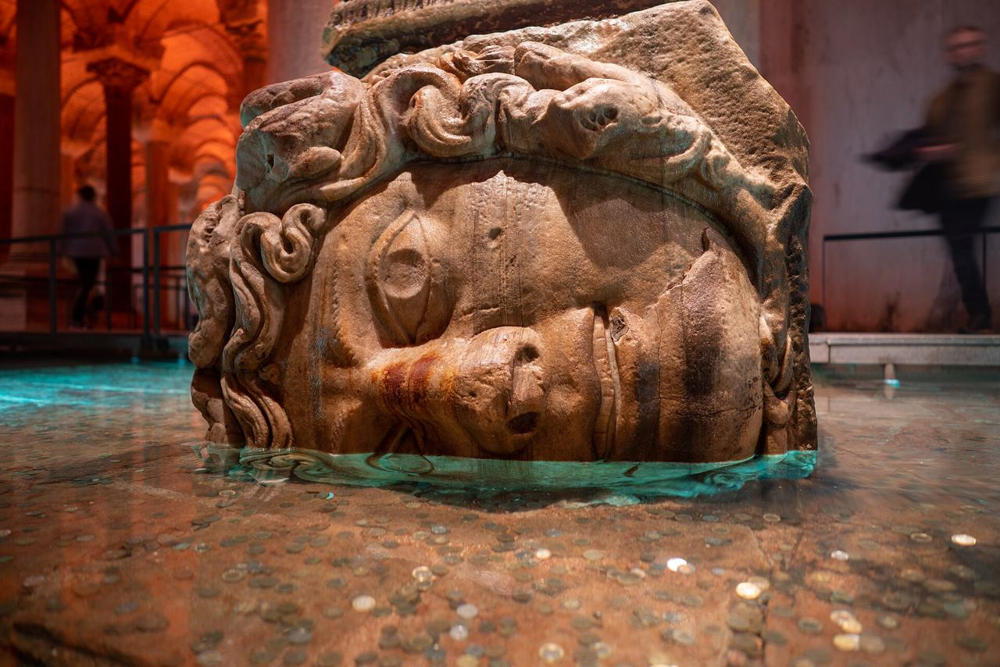
当柱础用的美杜莎头像。Nan Palmero，CC BY 2.0。A Medusa head reused as a column base. Nan Palmero, CC BY 2.0.
历史：532 年查士丁尼修建，为大皇宫储水，水从城外经瓦伦斯水道桥等系统引来。奥斯曼人用它浇花园，后来被半遗忘，直到 16 世纪法国学者吉尔（Petrus Gyllius）发现当地人从地下室打水抓鱼。两颗美杜莎头是典型的 spolia，一颗倒放一颗侧放，原因至今没有定论。History: built by Justinian in 532 to store water for the Great Palace, fed from outside the city via the Aqueduct of Valens and other channels. The Ottomans used it to water gardens, then half forgot it, until in the 16th century the French scholar Petrus Gyllius found locals drawing water and catching fish through their basements. The two Medusa heads are classic spolia, one upside down and one on its side; nobody knows why.
票价Ticket
白天约 1,950 TL；晚场更贵（约 3,000 TL）。通票不适用。About 1,950 TL by day; evening sessions cost more (about 3,000 TL). Museum Pass not valid.
建议Tip
开门时或傍晚去，排队短。Go at opening time or late afternoon for shorter queues.
拜占庭Byzantine
大皇宫马赛克博物馆 Great Palace Mosaic MuseumGreat Palace Mosaic Museum
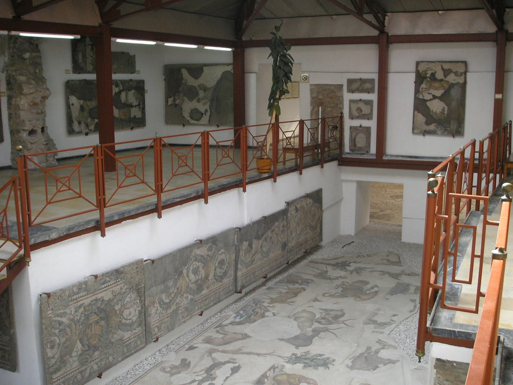
原地保存的大皇宫柱廊地面马赛克。公有领域。Floor mosaics of a Great Palace colonnade, preserved in place. Public domain.
历史：拜占庭的大皇宫（Great Palace）从赛车场一直延伸到海边，是一组由宫殿、教堂、花园、柱廊组成的建筑群，700 多年里一直是皇帝居所。今天几乎什么都没剩下，这里是看得到的最大一块：一条柱廊的地面马赛克，年代通常定在 5–6 世纪，画的是狩猎、田园、神话动物。History: the Byzantine Great Palace stretched from the Hippodrome down to the sea, a complex of palaces, churches, gardens and colonnades that was the imperial residence for over 700 years. Almost nothing is left; this is the largest visible piece: the floor mosaic of a colonnade, usually dated to the 5th–6th century, showing hunting, pastoral scenes and mythical beasts.
票价Ticket
约 €10，通票适用。About €10; Museum Pass valid.
位置Where
蓝色清真寺后面的 Arasta 市集里。Inside the Arasta Bazaar behind the Blue Mosque.
延伸More
沿海边 Kennedy Caddesi 往东，能看到海墙上布科莱昂宫（Boukoleon）的大理石窗框残迹，那是大皇宫的海上门面。白天去。Follow Kennedy Caddesi east along the shore to see marble window frames of the Boukoleon Palace in the sea walls, the Great Palace's façade on the water. Go in daylight.
拜占庭奥斯曼ByzantineOttoman
小圣索菲亚 Little Hagia Sophia · Küçük AyasofyaLittle Hagia Sophia Küçük Ayasofya
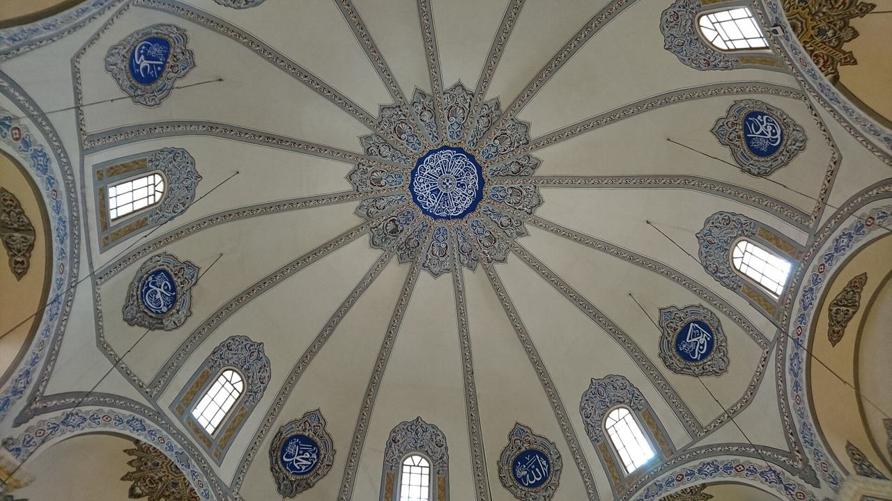
穹顶。bluetime93，CC BY-SA 4.0。The dome. bluetime93, CC BY-SA 4.0.
原为圣塞尔吉乌斯与巴克斯教堂（Sts. Sergius and Bacchus），527–536 年由查士丁尼和皇后狄奥多拉修建，比圣索菲亚还早一点，常被看作大圣索菲亚的“试验品”。现为清真寺，免费。找：柱子上方一圈希腊文铭文带，写着查士丁尼和“神所加冕的狄奥多拉”的名字，1500 年还在原位。Originally the Church of Sts Sergius and Bacchus, built 527–536 by Justinian and Empress Theodora, slightly earlier than Hagia Sophia and often seen as its "test run". Now a mosque, free. Look for: the band of Greek inscription above the columns naming Justinian and "God-crowned Theodora", still in place after 1,500 years.
侧礼拜堂的《复活》（Anastasis）壁画：基督把亚当和夏娃从墓中拉出。Till Niermann，CC BY-SA 3.0。The Anastasis fresco in the side chapel: Christ pulling Adam and Eve from their tombs. Till Niermann, CC BY-SA 3.0.
历史：“Chora”意为“城外的乡野”，因为修道院最早在君士坦丁城墙外。现存的马赛克和壁画是 1315–1321 年左右由学者型大臣狄奥多尔·梅托希特斯（Theodore Metochites）出资完成的，属于拜占庭最后的艺术高峰“巴列奥略文艺复兴”（Palaiologan Renaissance）。帝国当时已经很小很穷，艺术反而达到顶点。1511 年改为清真寺，20 世纪成为博物馆，2020 年改回清真寺，2024 年 5 月重新开放。History: "Chora" means "countryside outside the city", because the monastery first stood outside Constantine's walls. The surviving mosaics and frescoes were paid for around 1315–1321 by the scholar-statesman Theodore Metochites and belong to Byzantium's last artistic peak, the Palaiologan Renaissance. The empire was by then small and poor, yet its art reached a summit. It became a mosque in 1511, a museum in the 20th century, a mosque again in 2020, and reopened in May 2024.
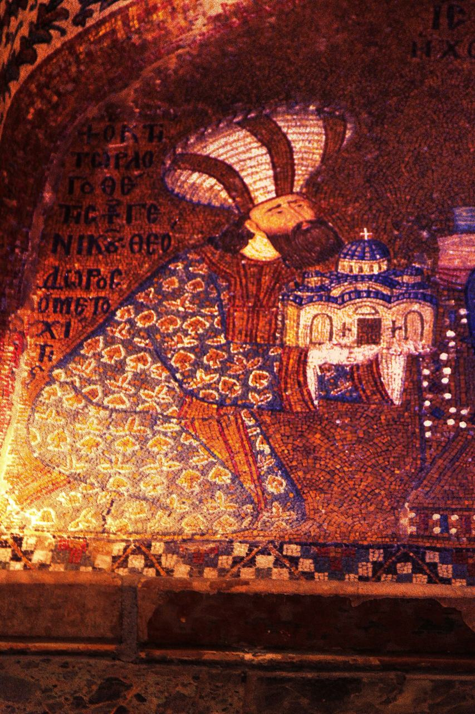
梅托希特斯戴着大帽子向基督献上教堂。José Luiz，CC BY-SA 3.0。Metochites, in his large hat, presents the church to Christ. José Luiz, CC BY-SA 3.0.
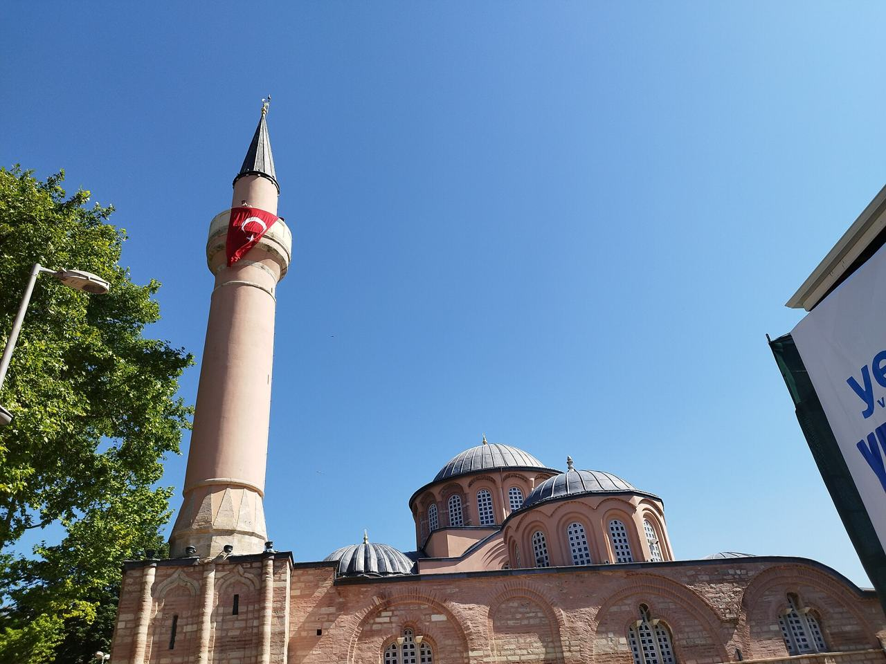
2024 年的外观。Limes Sorabicus，CC0。Exterior in 2024. Limes Sorabicus, CC0.
票价Ticket
约 €20，信用卡可付，通票不适用。About €20, cards accepted; Museum Pass not valid.
注意Note
是清真寺，礼拜时段暂停参观，周五下午才开。开放区域可能调整，内外前厅的马赛克是重点。It is a mosque: visits pause at prayer times, and on Fridays it opens only in the afternoon. Open areas may change; the mosaics of the inner and outer narthex are the highlight.
拜占庭Byzantine
泰克弗尔宫 Palace of the Porphyrogenitus · Tekfur SarayıPalace of the Porphyrogenitus Tekfur Sarayı
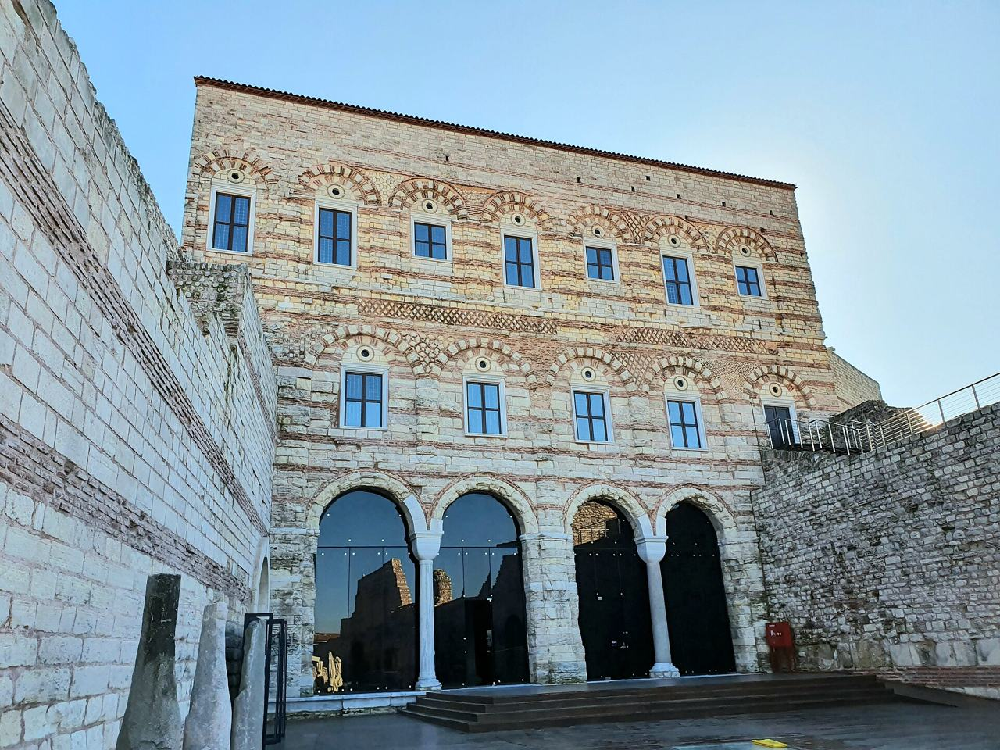
砖石相间的立面是拜占庭晚期的典型做法。Antoloji，CC BY-SA 4.0。Alternating brick and stone is typical of late Byzantine building. Antoloji, CC BY-SA 4.0.
城墙北端仅存的拜占庭宫殿建筑，约 13 世纪末，属于布拉赫奈宫（Blachernae）建筑群。拜占庭末期皇帝已不住大皇宫，而是住在这里。奥斯曼时期它做过动物园，18 世纪还是瓷砖作坊（Tekfur Sarayı 瓷砖）。2019 年修复后作为博物馆开放，有瓷砖作坊的展示。“Tekfur”在突厥语里就是对拜占庭君主的称呼。开放时间和票价以现场为准。The only surviving Byzantine palace building, at the north end of the walls, from around the late 13th century, part of the Blachernae palace complex. In the empire's last centuries the emperors lived here rather than in the Great Palace. Under the Ottomans it served as a menagerie, and in the 18th century as a tile workshop (Tekfur Sarayı tiles). Restored and opened as a museum in 2019, with displays on the tile workshop. "Tekfur" was the Turkish term for a Byzantine ruler. Check hours and prices on site.
拜占庭Byzantine
路过时值得看一眼Worth a look in passing
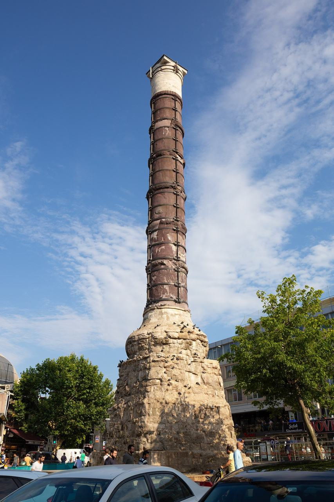
君士坦丁柱（330 年）。Dmitry A. Mottl，CC BY-SA 4.0。Column of Constantine (330). Dmitry A. Mottl, CC BY-SA 4.0.
君士坦丁柱Column of Constantine · Çemberlitaş：330 年建城时立在君士坦丁广场中央，斑岩柱身，顶上原有君士坦丁的雕像。传说他把从罗马带来的帕拉斯神像埋在柱下。电车 Çemberlitaş 站旁。Column of ConstantineÇemberlitaş: erected at the founding of the city in 330 in the centre of the Forum of Constantine; porphyry drums, once topped by a statue of Constantine. Legend says he buried the Palladium brought from Rome beneath it. Next to the Çemberlitaş tram stop.
瓦伦斯水道桥Aqueduct of Valens · Bozdoğan Kemeri：368 年完工，一直用到奥斯曼时代。Atatürk 大道从拱下穿过。Aqueduct of ValensBozdoğan Kemeri: completed in 368 and used into Ottoman times. Atatürk Boulevard runs under its arches.
潘托克拉托修道院Pantokrator Monastery · Zeyrek Camii：12 世纪科穆宁王朝的皇家修道院和陵墓，现为清真寺。Pantokrator MonasteryZeyrek Camii: the 12th-century imperial monastery and mausoleum of the Komnenian dynasty, now a mosque.
圣伊琳娜Hagia Irene：在托普卡帕宫第一庭院，含在宫殿联票里（线索 6）。Hagia Irene: in the First Court of Topkapı Palace, included in the palace combined ticket (clue 6).
伊斯坦布尔考古博物馆Istanbul Archaeology Museums：约 €15，通票适用。有亚历山大石棺、拜占庭石雕、蛇柱的一颗蛇头。Istanbul Archaeology Museums: about €15, Museum Pass valid. Alexander Sarcophagus, Byzantine sculpture, a head from the Serpent Column.
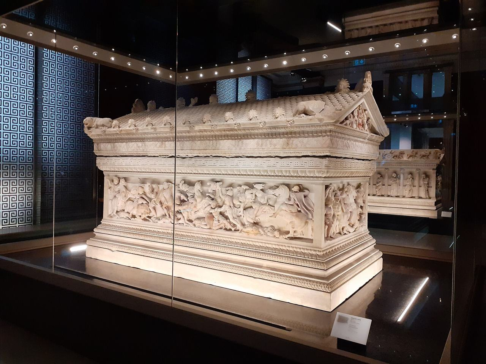
考古博物馆的亚历山大石棺（前 4 世纪，出土于西顿）。Kingbjelica，CC BY-SA 4.0。The Alexander Sarcophagus (4th century BC, found at Sidon), Archaeology Museums. Kingbjelica, CC BY-SA 4.0.
二、奥斯曼II. Ottoman
奥斯曼线索 6OttomanClue 6
托普卡帕宫 Topkapı PalaceTopkapı Palace
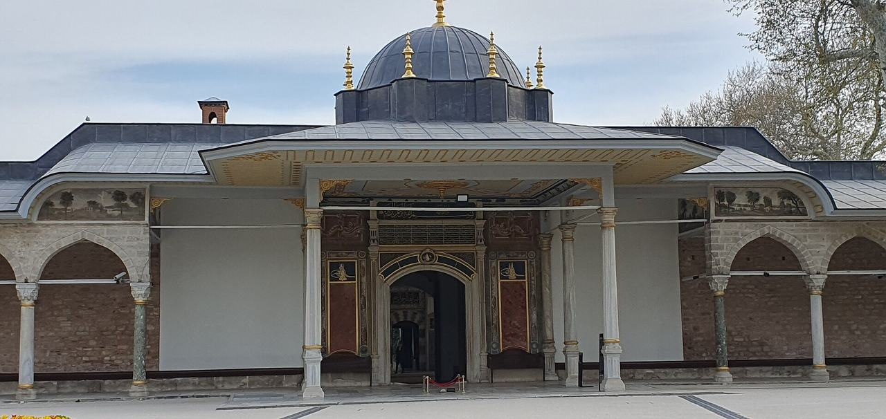
幸福之门（Bâbüssaâde），门后就是苏丹的私人世界。Yair Haklai，CC BY-SA 4.0。The Gate of Felicity (Bâbüssaâde); behind it lay the sultan's private world. Yair Haklai, CC BY-SA 4.0.
宫殿设计详见“皇宫”一章。这里只放参观信息。For the palace design, see the "Palaces" chapter. Visiting information only here.
票价Ticket
联票约 2,750 TL（约 €55），含宫殿、后宫、圣伊琳娜。单买后宫约 1,050 TL。通票适用（后宫等是否另付以现场为准）。Combined ticket about 2,750 TL (about €55), covering the palace, Harem and Hagia Irene. Harem alone about 1,050 TL. Museum Pass valid (check on site whether the Harem costs extra).
10 点前到。留 3–4 小时。圣物室禁止拍照。Arrive before 10:00. Allow 3–4 hours. No photos in the Holy Relics rooms.
奥斯曼线索 12OttomanClue 12
苏莱曼尼耶清真寺 Süleymaniye MosqueSüleymaniye Mosque
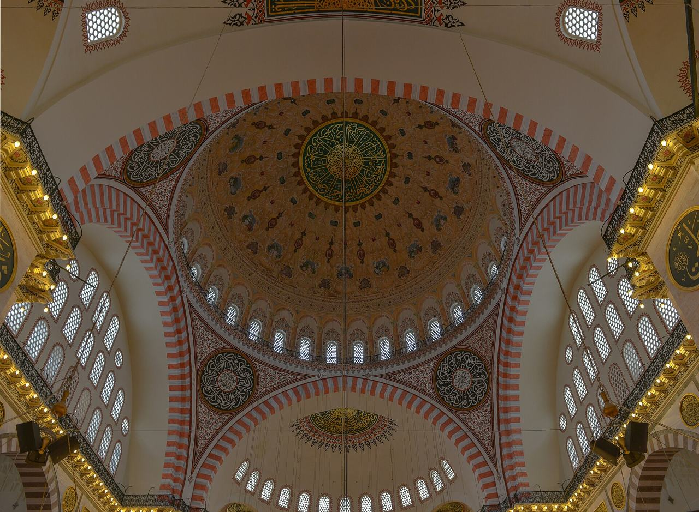
Arild Vågen，CC BY-SA 3.0。Arild Vågen, CC BY-SA 3.0.
1550–1557 年，建筑师希南（Mimar Sinan）为苏莱曼大帝建造。它不只是一座清真寺，而是一整套“社会综合体”（külliye）：经学院、医院、施粥所（imaret）、浴室、商铺、陵墓。苏莱曼和他的妻子许蕾姆（Hürrem）都葬在后院。希南自己的小陵墓就在清真寺外的街角，很容易错过。免费。Built 1550–1557 by the architect Mimar Sinan for Süleyman the Magnificent. It is not just a mosque but a whole social complex (külliye): colleges, a hospital, a soup kitchen (imaret), baths, shops and tombs. Süleyman and his wife Hürrem are buried in the rear garden. Sinan's own small tomb is on the street corner outside the mosque, easy to miss. Free.
和圣索菲亚对比着看Compare it with Hagia Sophia
同样是中央大穹顶 + 两个半穹顶的思路，但希南让内部更开阔、更明亮，没有挡视线的楼廊。The same idea of a central dome plus two half-domes, but Sinan made the interior more open and brighter, with no galleries blocking the view.
后院平台是看金角湾日落的好位置。The rear terrace is a great spot for sunset over the Golden Horn.
奥斯曼Ottoman
蓝色清真寺 / 苏丹艾哈迈德清真寺 Sultan Ahmed MosqueBlue Mosque / Sultan Ahmed Mosque
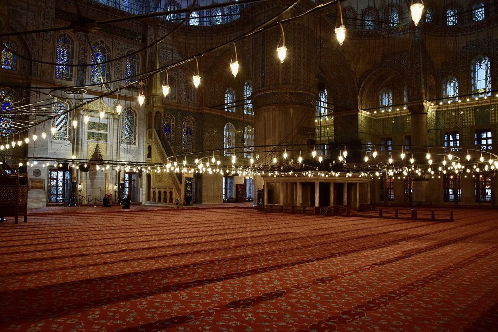
Ank Kumar，CC BY-SA 4.0。Ank Kumar, CC BY-SA 4.0.
1609–1616 年，苏丹艾哈迈德一世下令、建筑师赛德夫卡尔·穆罕默德·阿迦（Sedefkâr Mehmed Ağa，希南的学生）设计，有六座宣礼塔。故意建在圣索菲亚正对面，和它对视。内部两万多块伊兹尼克瓷砖带来了“蓝色”的名字。免费，游客入口在南侧，避开礼拜时间。Built 1609–1616 by order of Sultan Ahmed I, designed by Sedefkâr Mehmed Ağa (a pupil of Sinan), with six minarets. It was deliberately placed facing Hagia Sophia, staring it down. More than 20,000 İznik tiles inside gave it the name "Blue". Free; the visitor entrance is on the south side; avoid prayer times.
奥斯曼Ottoman
吕斯泰姆帕夏清真寺 Rüstem Pasha MosqueRüstem Pasha Mosque
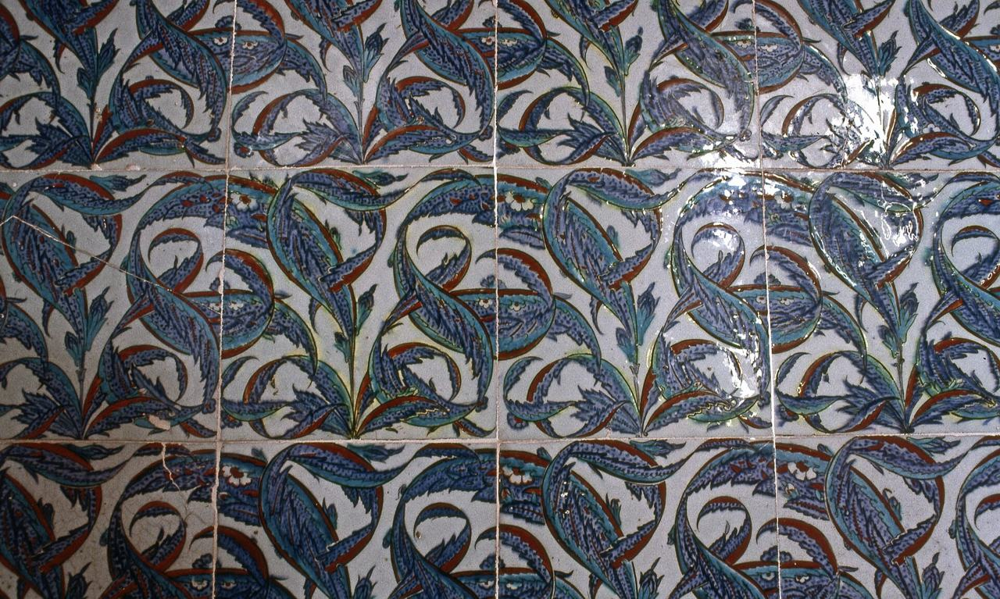
伊兹尼克瓷砖上的郁金香和康乃馨。Dosseman，CC BY-SA 4.0。Tulips and carnations on İznik tiles. Dosseman, CC BY-SA 4.0.
希南约 1561 年为大维齐尔吕斯泰姆帕夏设计，藏在香料市场旁的店铺上面，楼梯不起眼。内部几乎铺满伊兹尼克瓷砖，是全城瓷砖最精的清真寺之一。伊兹尼克就是古代的尼西亚（Nicaea）：325 年第一次基督教大公会议在那里召开，后来又是罗姆苏丹国的第一个首都。一块瓷砖背后有三层历史。Designed by Sinan around 1561 for the grand vizier Rüstem Pasha, it sits above shops next to the Spice Bazaar, up an inconspicuous staircase. The interior is almost entirely covered in İznik tiles, among the finest in the city. İznik is ancient Nicaea: the First Council of the Christian church met there in 325, and it later became the first capital of the Sultanate of Rûm. Three layers of history behind one tile.
奥斯曼线索 7OttomanClue 7
法提赫清真寺 Fatih MosqueFatih Mosque
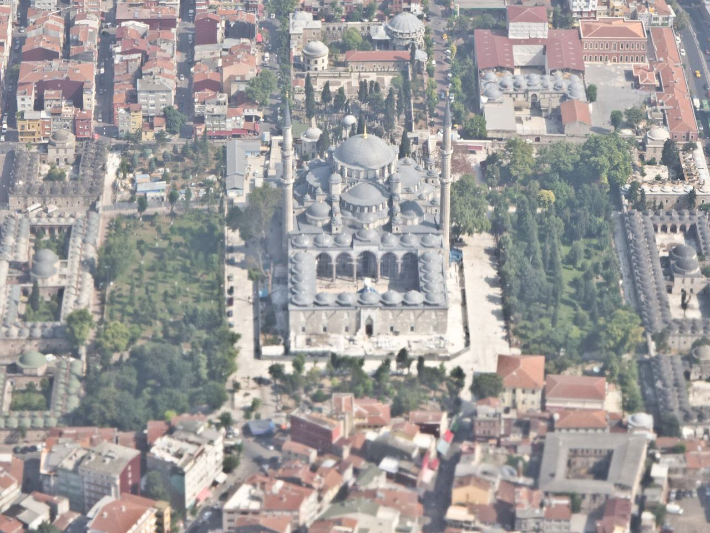
Carlos Delgado，CC BY-SA 3.0。Carlos Delgado, CC BY-SA 3.0.
“Fatih”意为“征服者”。穆罕默德二世 1463–1470 年在圣使徒教堂原址建造。圣使徒教堂是君士坦丁大帝为自己修的陵墓教堂，之后几百年的拜占庭皇帝都葬在那里。原清真寺毁于 1766 年地震，现在的建筑是 1771 年重建的。后院有穆罕默德二世的陵墓（türbe）。免费。"Fatih" means "the Conqueror". Mehmed II built it in 1463–1470 on the site of the Church of the Holy Apostles, Constantine the Great's burial church, where Byzantine emperors were buried for centuries. The original mosque fell in the 1766 earthquake; today's building was rebuilt in 1771. Mehmed II's tomb (türbe) is in the rear courtyard. Free.
奥斯曼线索 11OttomanClue 11
埃于普苏丹清真寺 Eyüp Sultan MosqueEyüp Sultan Mosque
Freedom's Falcon，CC BY-SA 3.0。Freedom's Falcon, CC BY-SA 3.0.
伊斯坦布尔最神圣的伊斯兰圣地，在城墙外的金角湾尽头。墓主阿布·阿尤布是先知的旗手，据说在 7 世纪 70 年代阿拉伯军队第一次大规模围攻君士坦丁堡时死在城下。1453 年后，穆罕默德二世的导师宣称找到了他的墓，于是建起清真寺；此后每位奥斯曼苏丹即位时都在这里举行佩剑仪式（kılıç kuşanma），相当于加冕礼。周末人很多，衣着要保守。Istanbul's holiest Islamic shrine, at the head of the Golden Horn outside the walls. The man buried here, Abu Ayyub, was the Prophet's standard-bearer, said to have died below the walls during the first great Arab siege of Constantinople in the 670s. After 1453 Mehmed II's teacher claimed to have found his grave, and a mosque was built; afterwards every Ottoman sultan held his sword-girding ceremony (kılıç kuşanma) here, the equivalent of a coronation. Crowded at weekends; dress modestly.
奥斯曼线索 8OttomanClue 8
鲁梅利堡垒 Rumeli HisarıRumeli Hisarı
从山上俯瞰堡垒和博斯普鲁斯海峡。Hamdigumus，CC0。The fortress and the Bosphorus from the hill above. Hamdigumus, CC0.
1452 年攻城前一年建成，和对岸他的曾祖父巴耶济德一世建的阿纳多卢堡垒（Anadolu Hisarı）一起卡住海峡最窄处，切断黑海方向对君士坦丁堡的海上补给，当时人叫它“割喉堡”（Boğazkesen）。票价约 €6，通票适用。离市中心较远，如果时间紧，坐博斯普鲁斯渡轮从海上看也能完成线索。Built in 1452, the year before the siege. With Anadolu Hisarı, built opposite by his great-grandfather Bayezid I, it closed the strait's narrowest point and cut Constantinople's sea supply from the Black Sea; people called it "Boğazkesen", the throat-cutter. About €6, Museum Pass valid. It is far from the centre; if short on time, seeing it from a Bosphorus ferry also completes the clue.
奥斯曼Ottoman
多尔玛巴赫切宫 Dolmabahçe PalaceDolmabahçe Palace
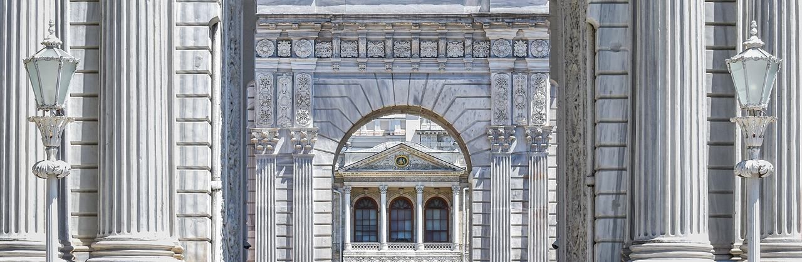
Julian Lupyan，CC0。Julian Lupyan, CC0.
票价Ticket
约 2,000 TL（含礼宾区和后宫），通票不适用。About 2,000 TL (state rooms and Harem); Museum Pass not valid.
时间Hours
周一闭馆；内部禁止拍照，按指定路线参观。Closed Mondays; no photos inside; visits follow a set route.
设计解读见“皇宫”一章。For the design, see the "Palaces" chapter.
希腊东正教线索 9Greek OrthodoxClue 9
芬内尔与巴拉特 Fener & BalatFener & Balat
普世牧首区的圣乔治教堂。Klearchos Kapoutsis，CC BY 2.0。Church of St George at the Ecumenical Patriarchate. Klearchos Kapoutsis, CC BY 2.0.“红色城堡”：芬内尔希腊东正教学院。Antoloji，CC BY-SA 4.0。The "Red Castle": the Phanar Greek Orthodox College. Antoloji, CC BY-SA 4.0.
1453 年后，穆罕默德二世保留了君士坦丁堡牧首，让他管理帝国境内的东正教徒（millet 制度）。牧首区 1601 年起设在芬内尔的圣乔治教堂。住在这里的希腊精英被称为“芬内尔人”（Phanariotes），为奥斯曼当翻译、外交官，甚至管理罗马尼亚的公国。1821 年希腊独立战争爆发，牧首格里高利五世在正门被处死，此后正门一直焊死。巴拉特是传统的犹太人街区，彩色老房子很适合散步。牧首区可免费参观，衣着保守。After 1453 Mehmed II kept the Patriarch of Constantinople and made him head of the empire's Orthodox Christians (the millet system). Since 1601 the patriarchate has been at the Church of St George in Fener. The Greek elite living here, the Phanariotes, served the Ottomans as interpreters and diplomats and even governed principalities in Romania. When the Greek War of Independence broke out in 1821, Patriarch Gregory V was executed at the main gate, which has stayed welded shut ever since. Balat was a traditional Jewish quarter; its colourful old houses are lovely for a stroll. The patriarchate is free to visit; dress modestly.
热那亚 / 奥斯曼Genoese / Ottoman
加拉塔：热那亚人的城中城Galata: the Genoese city within the city
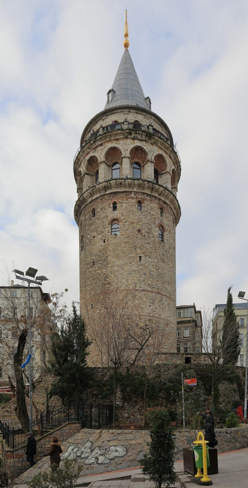
加拉塔塔（1348 年）。Martin Falbisoner，CC BY-SA 4.0。Galata Tower (1348). Martin Falbisoner, CC BY-SA 4.0.
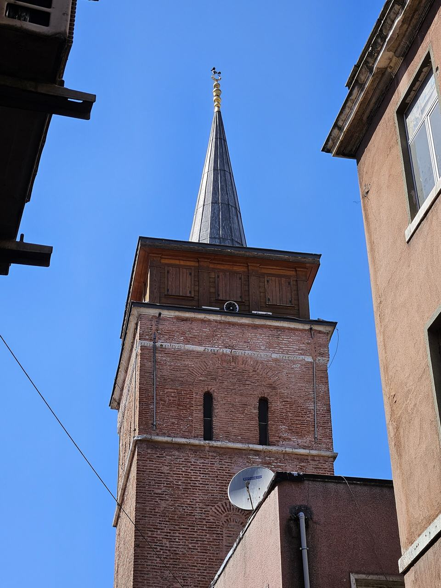
阿拉伯清真寺：哥特式钟楼改成的宣礼塔。Antoloji，CC BY-SA 4.0。Arap Mosque: a Gothic bell tower turned minaret. Antoloji, CC BY-SA 4.0.
金角湾北岸的加拉塔在拜占庭晚期是热那亚人的自治殖民地。加拉塔塔是热那亚人 1348 年建的“基督之塔”（Christea Turris），票价约 €30。阿拉伯清真寺（Arap Camii）原是 14 世纪道明会的哥特式教堂，15 世纪末改为清真寺，后来收留了从西班牙被驱逐的安达卢西亚穆斯林，因此得名。当地传说它最早由 8 世纪围城的阿拉伯人修建。你能看出哪部分是真的吗？Galata, on the north shore of the Golden Horn, was a self-governing Genoese colony in late Byzantine times. Galata Tower was the Genoese "Tower of Christ" (Christea Turris) of 1348; about €30. The Arap Mosque (Arap Camii) was a 14th-century Dominican Gothic church, converted into a mosque in the late 15th century; it later housed Andalusian Muslims expelled from Spain, hence the name. Local legend says it was first built by Arab besiegers in the 8th century. Can you tell which part is true?
奥斯曼Ottoman
大巴扎与香料市场 Grand Bazaar · Spice BazaarGrand Bazaar · Spice Bazaar
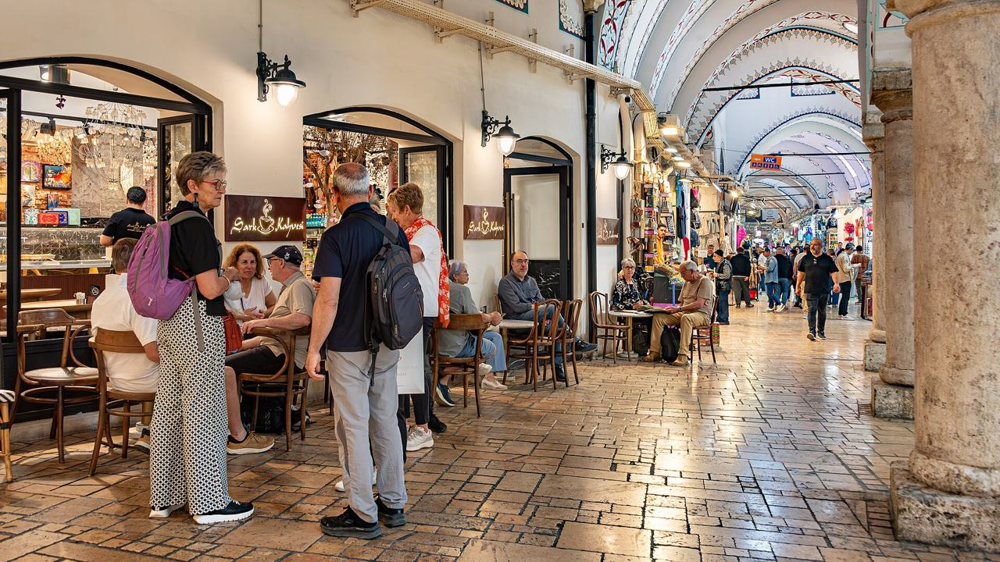
Jorge Franganillo，CC BY 4.0。Jorge Franganillo, CC BY 4.0.Miomir Magdevski，CC BY-SA 4.0。Miomir Magdevski, CC BY-SA 4.0.
大巴扎的核心是穆罕默德二世征服后建的有顶市场（bedesten），收入用来供养圣索菲亚清真寺，周日关门。香料市场（Mısır Çarşısı，“埃及市场”）建于 17 世纪，因为建造资金来自埃及的税收而得名。留意扒手，砍价是常态。The core of the Grand Bazaar is the covered market hall (bedesten) built by Mehmed II after the conquest; its income supported the Hagia Sophia mosque. Closed on Sundays. The Spice Bazaar (Mısır Çarşısı, "Egyptian Market") dates from the 17th century and is named after the Egyptian tax revenues that paid for it. Watch for pickpockets; haggling is normal.
Expedition
狄奥多西城墙远征 Theodosian Land WallsTheodosian Land Walls expedition
Carole Raddato，CC BY-SA 2.0。Carole Raddato, CC BY-SA 2.0.
这道墙守了这座城一千年。5 世纪初（约 408–413 年），狄奥多西二世的执政官安提米乌斯主持修建；447 年地震后重建并加上外墙，形成了“护城河 + 外墙 + 内墙”的三重防线。内墙厚约 5 米、高约 12 米，原有 96 座塔楼，从马尔马拉海一直延伸到金角湾。阿瓦尔人、波斯人、阿拉伯人、保加尔人、罗斯人都没能攻破它。1204 年十字军是从金角湾海墙打进来的。直到 1453 年，奥斯曼的巨炮才轰开了它。These walls protected the city for a thousand years. They were built in the early 5th century (around 408–413) under the prefect Anthemius for Theodosius II, then rebuilt after the 447 earthquake with an added outer wall, creating a triple line of moat, outer wall and inner wall. The inner wall is about 5 m thick and 12 m high, with 96 towers originally, running from the Sea of Marmara to the Golden Horn. Avars, Persians, Arabs, Bulgars and Rus all failed to break it. The crusaders of 1204 got in through the Golden Horn sea walls. Only in 1453 did the Ottoman great guns breach it.
一个小修正：奥斯曼人其实修过城墙。穆罕默德二世攻城后立刻修补了缺口，城墙在之后两三百年里也断续维护过。真正的荒废是从 19 世纪开始的，因为城市已不再需要城防。20 世纪 80–90 年代的部分修复又因为“修得太新”而备受争议。所以你会同时看到原始废墟、粗糙修补和崭新的仿古墙三种状态，这本身也是研究素材。A small correction: the Ottomans did repair the walls. Mehmed II patched the breaches right after the conquest, and the walls were maintained on and off for two or three centuries. Real neglect began in the 19th century, when the city no longer needed fortifications. Parts restored in the 1980s–90s were controversial for looking "too new". So you will see original ruins, rough patches and brand-new replica walls side by side, which is research material in itself.
路线：北 → 南，约 6.5 公里Route: north → south, about 6.5 km
距离是从金角湾岸边算起的大致里程。整段走下来要 3–4 小时，可以按 Day 3 / Day 4 的安排拆成两段。Distances are approximate, counted from the Golden Horn shore. The whole walk takes 3–4 hours and can be split in two, as in Day 3 / Day 4.
0
Ayvansaray · 金角湾岸边陆墙的北端起点，这一段属于后来扩建的布拉赫奈城墙。附近的安内马斯地牢（Anemas）传说关押过被废的皇帝，修复中，常不开放。Ayvansaray · Golden Horn shoreThe northern start of the land walls; this stretch belongs to the later Blachernae extension. The nearby Anemas Dungeons, said to have held deposed emperors, are under restoration and often closed.
0.8
泰克弗尔宫 Tekfur Sarayı进博物馆看看，墙顶露台能看到城墙走向。Tekfur SarayıVisit the museum; its upper terrace shows the line of the walls.
1.5
Edirnekapı · 阿德里安堡门老城最高点。据传 1453 年 5 月 29 日穆罕默德二世由此门入城。门内是米赫丽玛苏丹清真寺，往东走 5 分钟就是卡里耶。这是比较安全方便的登墙点。Edirnekapı · Adrianople GateThe highest point of the old city. Tradition says Mehmed II entered through this gate on 29 May 1453. Inside is the Mihrimah Sultan Mosque, and Chora is 5 minutes east. A relatively safe, easy place to climb onto the walls.
2.2
吕科斯河谷 Lycus Valley地势低洼，是城防最弱的一段，也是 1453 年炮击最猛烈的地方。墙体在这里破损最严重。Lycus ValleyLow ground and the weakest part of the defences, where the 1453 bombardment was fiercest. The walls are most damaged here.
3.0
Topkapı · 圣罗曼努斯门 Gate of St. Romanus别和托普卡帕宫搞混，这里的意思是“大炮门”。末代皇帝君士坦丁十一世据信在这一带战死。附近有 Panorama 1453 全景博物馆，有电车站。Topkapı · Gate of St RomanusNot to be confused with Topkapı Palace; here the name means "Cannon Gate". The last emperor, Constantine XI, is believed to have died fighting around here. The Panorama 1453 museum and a tram stop are nearby.
3.8
Mevlanakapı · 雷吉乌姆门 Gate of RhegiumMevlanakapı · Gate of Rhegium主线线索 1 在这里。门楼附近石块上刻有 447 年重建时的拉丁文和希腊文铭文。Quest clue 1 is here. Blocks around the gatehouse carry the Latin and Greek inscriptions of the 447 rebuilding.Mevlanakapı 外侧的墙面和铭文石块。Dosseman，CC BY-SA 4.0。Outer wall face at Mevlanakapı with inscribed blocks. Dosseman, CC BY-SA 4.0.
4.6
Silivrikapı · 泉门 Pege Gate出城往西走约 500 米是巴勒克勒圣泉修道院（Zoodochos Pege · Balıklı Rum Manastırı），至今仍是希腊东正教圣地。传说 1453 年有修士正在煎鱼，听到城破的消息不肯相信，说“除非这些鱼跳回水里”，鱼就真的跳进了泉水。Silivrikapı · Pege GateAbout 500 m west outside the walls is the Balıklı monastery of the Life-giving Spring (Zoodochos Pege · Balıklı Rum Manastırı), still a Greek Orthodox shrine. Legend says that in 1453 a monk frying fish refused to believe the city had fallen "unless these fish jump back into the water", and the fish leapt into the spring.
5.4
Belgradkapı · 贝尔格莱德门比较安静，墙体保存好。名字来自 1521 年苏莱曼攻下贝尔格莱德后安置在这里的工匠。Belgradkapı · Belgrade GateQuiet, with well-preserved walls. Named after craftsmen from Belgrade settled here after Süleyman took the city in 1521.
6.0
耶迪库勒 · 金门 Yedikule · Golden Gate金门（Porta Aurea）是皇帝凯旋入城的礼仪大门，大理石砌成。1458 年穆罕默德二世把它围进一座七塔堡垒，后来用作国库和监狱，1622 年少年苏丹奥斯曼二世在这里被杀。Yedikule · Golden GateThe Golden Gate (Porta Aurea) was the marble ceremonial gate for imperial triumphs. In 1458 Mehmed II enclosed it in a seven-towered fortress, later used as a treasury and prison; the young Sultan Osman II was killed here in 1622.
6.5
马尔马拉海岸陆墙南端终点，和海墙相接。回程坐 Marmaray（Yedikule 或 Kazlıçeşme 站）。Sea of Marmara shoreThe southern end of the land walls, where they meet the sea walls. Return by Marmaray (Yedikule or Kazlıçeşme station).
从城外看金门一侧。Dosseman，CC BY-SA 4.0。The Golden Gate side seen from outside the walls. Dosseman, CC BY-SA 4.0.耶迪库勒堡垒内部。Richard Nevell，CC BY-SA 4.0。Inside Yedikule Fortress. Richard Nevell, CC BY-SA 4.0.
耶迪库勒开放状况：2026 年的信息互相矛盾，有说免费开放的，也有说目前只对持预约的土耳其公民开放的。就算进不去，从城外也能看到金门和塔楼，不影响远征。Yedikule opening status: 2026 information is contradictory; some sources say it is open free, others that it is currently open only to Turkish citizens with a reservation. Even if you can't get in, the Golden Gate and towers are visible from outside, so the expedition is unaffected.
外墙、内墙与塔楼。Peter Christian Riemann，CC BY-SA 4.0。Outer wall, inner wall and towers. Peter Christian Riemann, CC BY-SA 4.0.
远征守则Expedition rules
只在白天走，最好结伴，天黑前离开。部分门洞、地道和墙根有流浪汉或喝酒的人，感觉不对就绕到大路上。Walk only in daylight, ideally with company, and leave before dark. Some gateways, passages and wall bases attract homeless people or drinkers; if it feels wrong, detour to the main road.
主要在墙外侧的步道和菜园边走，只从有台阶或坡道的地方（如 Edirnekapı、Topkapı）上墙顶。墙顶没有护栏，雨后很滑，不要爬碎石堆和没修复的段落。Walk mostly on paths and garden edges outside the walls, and only climb onto the walls where there are steps or ramps (e.g. Edirnekapı, Topkapı). There are no railings on top and it is slippery after rain; don't climb rubble or unrestored sections.
穿防滑运动鞋，带水和零食。沿途商店少，过大马路（Millet / Vatan / Turgut Özal 大道）时走人行横道。Wear grippy shoes and bring water and snacks. Shops are few; use crossings on the big roads (Millet / Vatan / Turgut Özal avenues).
流浪狗大多温和，别招惹成群的狗，不要跑。Stray dogs are mostly calm; don't provoke packs and don't run.
手机离线下载地图。不要带走任何石头，这是世界遗产。Download offline maps. Don't take any stones: this is a World Heritage site.
Palaces
三座皇宫，三种统治方式Three palaces, three ways of ruling
这座城先后有三座主要的皇宫：拜占庭的大皇宫、奥斯曼的托普卡帕宫、19 世纪的多尔玛巴赫切宫。对比它们的布局，就能读出统治者怎样看待自己和臣民。The city had three main palaces in turn: the Byzantine Great Palace, the Ottoman Topkapı, and 19th-century Dolmabahçe. Comparing their layouts shows how rulers saw themselves and their subjects.
大皇宫 Great PalaceGreat Palace
托普卡帕宫 TopkapıTopkapı
多尔玛巴赫切宫 DolmabahçeDolmabahçe
使用年代In use
330 – 约 1081（之后皇帝移居布拉赫奈）330 – c. 1081 (then emperors moved to Blachernae)
约 1478 – 1856c. 1478 – 1856
1856 – 1922
布局Layout
宫殿、教堂、花园、柱廊组成的建筑群，从赛车场延伸到海边A complex of palaces, churches, gardens and colonnades from the Hippodrome to the sea
一层层递进的庭院，散布着亭阁（köşk）Successive courtyards scattered with pavilions (köşk)
沿海岸一字排开的单一巨型建筑A single huge building strung along the shore
核心理念Core idea
皇帝是神在人间的代表：宫廷仪式模仿天上秩序The emperor as God's representative on earth: court ritual mirrored heavenly order
隐身与沉默：越往里越私密，苏丹很少露面Invisibility and silence: ever more private inward; the sultan rarely appeared
向欧洲看齐：证明帝国是“现代国家”Catching up with Europe: proving the empire a "modern state"
建筑风格Style
罗马—拜占庭Roman–Byzantine
奥斯曼—波斯—中亚的亭阁传统Ottoman–Persian–Central Asian pavilion tradition
新巴洛克、新古典混合，由亚美尼亚裔巴勒扬家族设计Neo-Baroque and Neoclassical mix, by the Armenian Balyan family
现在能看到What you can see now
马赛克博物馆、海墙残迹Mosaic Museum, sea-wall remains
几乎完整Almost complete
完整Complete
托普卡帕宫：一座“石头营帐”Topkapı: a "camp in stone"
托普卡帕不是一栋宫殿，而是一组围绕庭院展开的低矮建筑和亭阁，坐落在古拜占庭卫城所在的半岛尖端。学者（如哈佛的 Gülru Necipoğlu）常把它和突厥—蒙古游牧君主的营地、波斯—帖木儿式的园林宫殿联系起来：君主在花园里的一座座亭子之间移动，而不是住在一栋大楼里。它的空间逻辑就是一层层门：每过一道门，能进入的人更少，声音更轻。Topkapı is not one building but a group of low buildings and pavilions around courtyards, on the tip of the peninsula where ancient Byzantion's acropolis stood. Scholars (such as Harvard's Gülru Necipoğlu) often link it to the camps of Turco-Mongol nomadic rulers and Persian–Timurid garden palaces: the ruler moves between pavilions in a garden instead of living in one big block. Its spatial logic is a sequence of gates: with each gate fewer people may pass and voices grow quieter.
任何人都可以进。圣伊琳娜教堂、造币厂、面包房都在这里。Open to anyone. Hagia Irene, the mint and the bakery are here.
致敬之门 Bâbüsselâm → 第二庭院Gate of Salutation Bâbüsselâm → Second Court
只有苏丹可以骑马通过。这里是帝国政府所在：御前会议厅（Divan · Kubbealtı），苏丹从墙上的格窗后面暗中旁听；还有十座穹顶的御膳房。Only the sultan could ride through on horseback. This was the seat of government: the Imperial Council hall (Divan · Kubbealtı), where the sultan listened in secretly from behind a grille, and the ten-domed palace kitchens.
幸福之门 Bâbüssaâde → 第三庭院Gate of Felicity Bâbüssaâde → Third Court
苏丹的私人领域：觐见厅（Arz Odası）、宫廷学校（Enderun）、宝库（托普卡帕匕首、勺匠钻石）、圣物室（1517 年征服埃及后获得的先知遗物）。The sultan's private domain: the Audience Chamber (Arz Odası), the palace school (Enderun), the Treasury (Topkapı Dagger, Spoonmaker's Diamond) and the Holy Relics (relics of the Prophet acquired with the conquest of Egypt in 1517).
第四庭院：花园与亭阁Fourth Court: gardens and pavilions
巴格达亭、埃里温亭、开斋亭，面朝博斯普鲁斯和金角湾。这才是苏丹“生活”的地方。The Baghdad, Revan and Iftar pavilions face the Bosphorus and Golden Horn. This is where the sultan actually "lived".
后宫 Harem（侧翼，另需门票）Harem (side wing, separate ticket)
苏丹母后、妃嫔、子女和宦官的住所，数百个房间。17 世纪“女人苏丹国”时期，这里是真正的权力中心。Residence of the sultan's mother, consorts, children and eunuchs, with hundreds of rooms. In the 17th-century "Sultanate of Women" it was the true centre of power.
帝王之门，门楣上有苏丹的花押（tughra）。Kemal Kozbaev，CC BY-SA 4.0。The Imperial Gate, with the sultan's monogram (tughra) above. Kemal Kozbaev, CC BY-SA 4.0.御前会议厅内部。公有领域。Inside the Imperial Council hall. Public domain.后宫庭院。Julian Lupyan，CC0。A Harem courtyard. Julian Lupyan, CC0.巴格达亭（1639 年，纪念攻下巴格达）。Moonik，CC BY-SA 3.0。The Baghdad Kiosk (1639, celebrating the capture of Baghdad). Moonik, CC BY-SA 3.0.
给中国人的彩蛋：御膳房里的中国瓷器A bonus for Chinese visitors: Chinese porcelain in the palace kitchens
托普卡帕宫藏有一万多件中国瓷器，从元代、明代的青瓷、青花一直到清代，是中国以外最大的收藏之一。奥斯曼宫廷特别偏爱龙泉青瓷，相传它遇到毒药会变色。这些瓷器经由海上和陆上丝绸之路、经过波斯和埃及商人辗转运来，有些还被奥斯曼工匠镶上了金和宝石。御膳房本身就是一座博物馆，看完瓷器想想：中亚游牧民的后代，用中国瓷器吃着融合拜占庭、波斯、阿拉伯风味的宫廷菜。 图：托普卡帕宫藏中国瓷瓶。Dosseman，CC BY-SA 4.0。Topkapı holds more than ten thousand pieces of Chinese porcelain, from Yuan and Ming celadon and blue-and-white to Qing wares, one of the largest collections outside China. The Ottoman court especially loved Longquan celadon, said to change colour on contact with poison. The pieces came via the maritime and overland Silk Roads through Persian and Egyptian merchants, and some were later set with gold and gems by Ottoman craftsmen. The kitchens are a museum in themselves. After seeing the porcelain, think: descendants of Central Asian nomads, eating a palace cuisine blending Byzantine, Persian and Arab flavours, off Chinese porcelain. Picture: Chinese porcelain vase at Topkapı. Dosseman, CC BY-SA 4.0.
御膳房展陈。Joseolgon，CC BY 4.0。Kitchen displays. Joseolgon, CC BY 4.0.
多尔玛巴赫切宫：一座“想变成欧洲”的宫殿Dolmabahçe: a palace that wanted to be Europe
礼仪大厅的巨型水晶吊灯。Dan from Brussels，CC BY-SA 2.0。The giant crystal chandelier in the Ceremonial Hall. Dan from Brussels, CC BY-SA 2.0.
1843–1856 年，苏丹阿卜杜勒迈吉德一世在博斯普鲁斯岸边填海（“Dolmabahçe”意为“填出来的花园”）建成这座宫殿，设计者是亚美尼亚裔的巴勒扬（Balyan）家族。这正是坦志麦特改革（Tanzimat）时期：帝国想通过西化改革追上欧洲。宫殿约 285 个房间，礼仪大厅的波希米亚水晶吊灯重约 4.5 吨，天花板大量使用金箔。代价也很高：巨额开支是帝国 1875 年财政违约的原因之一。Sultan Abdülmecid I built this palace in 1843–1856 on reclaimed land on the Bosphorus ("Dolmabahçe" means "filled-in garden"); it was designed by the Armenian Balyan family. This was the Tanzimat era, when the empire tried to catch up with Europe through westernising reforms. The palace has about 285 rooms; the Bohemian crystal chandelier in the Ceremonial Hall weighs about 4.5 tonnes, and the ceilings use huge amounts of gold leaf. The cost was high: the enormous spending was one cause of the empire's 1875 default.
对比托普卡帕：这里没有层层庭院，而是一栋对着大海展示自己的大楼。苏丹不再“隐身”，他想被欧洲看见。共和国国父凯末尔 1938 年 11 月 10 日 9 点 05 分在这里去世，宫里的钟据说都停在那一刻。Compare with Topkapı: no layered courtyards, just one building displaying itself to the sea. The sultan no longer "hid"; he wanted Europe to see him. Atatürk, founder of the Republic, died here at 9:05 on 10 November 1938, and the palace clocks are said to have been stopped at that moment.
另外两座可选：亚洲岸的贝勒贝伊宫（Beylerbeyi，19 世纪夏宫，通票适用）；耶尔德兹宫（Yıldız）目前在修缮中。Two more, optional: Beylerbeyi Palace on the Asian shore (19th-century summer palace, Museum Pass valid); Yıldız Palace is currently under restoration.
Steppe & Crescent
突厥人怎样来到这里，伊斯兰又怎样走向中亚How the Turks came here, and how Islam reached Central Asia
这其实是两条方向相反、在中亚交汇的路线：伊斯兰从阿拉伯半岛向东传到中亚；突厥人从蒙古高原向西迁徙。10 世纪前后，两者在河中地区（今乌兹别克斯坦一带）相遇，突厥人皈依了伊斯兰，然后带着新信仰继续西进，最终到达君士坦丁堡城下。These are really two routes running in opposite directions and meeting in Central Asia: Islam spread east from Arabia to Central Asia; the Turks migrated west from the Mongolian plateau. Around the 10th century the two met in Transoxiana (roughly today's Uzbekistan); the Turks converted to Islam and carried the new faith west, eventually reaching the walls of Constantinople.
伊斯兰东传（7–10 世纪）Islam spreads east (7th–10th c.)突厥西迁（6–15 世纪）Turks migrate west (6th–15th c.)虚线：较晚或间接的延伸Dashed: later or indirect extensions
第一步：伊斯兰走向中亚Step one: Islam reaches Central Asia
632–651
先知去世后，阿拉伯军队迅速击败拜占庭（夺取叙利亚、埃及）和萨珊波斯（651 年灭亡）。拜占庭失去了大半领土，但守住了君士坦丁堡。After the Prophet's death, Arab armies quickly defeated Byzantium (taking Syria and Egypt) and Sasanian Persia (which fell in 651). Byzantium lost most of its territory but held Constantinople.
674–678
阿拉伯人第一次大规模围攻君士坦丁堡（717–718 年又有第二次），都被城墙和“希腊火”击退。埃于普的墓就是这个时期的记忆。The first great Arab siege of Constantinople (a second followed in 717–718); both were repelled by the walls and "Greek fire". The tomb at Eyüp is a memory of this period.
705–715
倭马亚王朝将领屈底波（Qutayba ibn Muslim）征服布哈拉、撒马尔罕，伊斯兰进入河中地区。The Umayyad general Qutayba ibn Muslim conquers Bukhara and Samarkand; Islam enters Transoxiana.
751
怛罗斯之战（Battle of Talas）：阿拔斯王朝击败唐朝高仙芝的军队。随后安史之乱爆发，唐朝势力退出中亚，此后这片地区逐步伊斯兰化。和中国历史直接相连的一刻。Battle of Talas: the Abbasids defeat the Tang army under Gao Xianzhi. The An Lushan rebellion soon follows, Tang power withdraws from Central Asia, and the region gradually becomes Muslim. A moment directly linked to Chinese history.
819–999
萨曼王朝（Samanids，首都布哈拉）：波斯人的穆斯林王朝。大量突厥人作为奴隶兵（ghulam / mamluk）被买进伊斯兰世界，凭军功掌握权力。The Samanids (capital Bukhara): a Persian Muslim dynasty. Large numbers of Turks were bought into the Islamic world as slave soldiers (ghulam / mamluk) and rose to power through military service.
蒙古鄂尔浑河谷的毗伽可汗碑（732–735 年）：突厥人最早的本族文字记录之一，“Türk”这个名字就出现在上面。碑的另一面是唐玄宗时期的汉文。公有领域。The Bilge Khagan stele in Mongolia's Orkhon Valley (732–735): one of the earliest records written by Turks in their own script; the name "Türk" appears on it. The other side carries a Chinese text from the reign of Emperor Xuanzong of Tang. Public domain.
第二步：突厥人走向安纳托利亚Step two: the Turks reach Anatolia
552
突厥汗国（Göktürks）在蒙古高原建立，即《隋书》《唐书》里的“突厥”。568 年拜占庭皇帝就派使节蔡马库斯（Zemarchus）去见西突厥可汗，两国联手对付波斯。罗马人和突厥人认识，比 1453 年早了近 900 年。The Göktürk Khaganate is founded on the Mongolian plateau, the "Tujue" of the Chinese Sui and Tang histories. In 568 the Byzantine emperor sent the envoy Zemarchus to the Western Turkic khagan to ally against Persia. Romans and Turks knew each other almost 900 years before 1453.
10 世纪中mid-10th c.
喀喇汗王朝（Karakhanids）的萨图克·博格拉汗皈依伊斯兰，这是第一个皈依的突厥王朝，统治喀什和河中。Satuq Bughra Khan of the Karakhanids converts to Islam: the first Turkic dynasty to convert, ruling Kashgar and Transoxiana.
1040–1055
乌古斯突厥（Oghuz）的塞尔柱家族崛起，1055 年进入巴格达，成为哈里发的保护者“苏丹”。今天的土耳其语就属于乌古斯语支。The Seljuk family of the Oghuz Turks rises, entering Baghdad in 1055 as "sultan", protector of the caliph. Modern Turkish belongs to the Oghuz branch.
1071
曼齐刻尔特之战（Manzikert · Malazgirt）：塞尔柱苏丹阿尔普·阿尔斯兰俘虏拜占庭皇帝罗曼努斯四世。拜占庭随后陷入内战，突厥游牧部落大量涌入安纳托利亚。Battle of Manzikert (Malazgirt): the Seljuk sultan Alp Arslan captures Emperor Romanos IV. Byzantium falls into civil war, and Turkic nomads pour into Anatolia.
1072–74
喀什人马哈茂德·喀什噶里在巴格达写成《突厥语大词典》（Dīwān Lughāt al-Turk），附有一张以喀什为中心的世界地图。词典里已经记下了 yoğurt（酸奶）等词。Mahmud al-Kashgari of Kashgar writes the Dīwān Lughāt al-Turk (Compendium of the Turkic Languages) in Baghdad, with a world map centred on Kashgar. It already records words like yoğurt.
1077
罗姆苏丹国建立，第一个首都就是离君士坦丁堡不远的尼西亚（伊兹尼克），后迁科尼亚。“罗姆”就是“罗马”。The Sultanate of Rûm is founded; its first capital is Nicaea (İznik), not far from Constantinople, later Konya. "Rûm" simply means "Rome".
1243
蒙古人在克塞山之战击败罗姆苏丹国，安纳托利亚分裂成许多突厥小公国（beyliks）。蒙古西征也把更多突厥部落推向西方。The Mongols defeat the Sultanate of Rûm at Köse Dağ; Anatolia splinters into many small Turkish principalities (beyliks). The Mongol advance also pushed more Turkic tribes west.
约 1299c. 1299
奥斯曼（Osman）在比提尼亚、拜占庭边境建国。1326 年占布尔萨，1354 年渡海进入欧洲，1360 年代占埃迪尔内。君士坦丁堡成了被奥斯曼领土包围的孤岛。Osman founds his state in Bithynia on the Byzantine frontier. Bursa falls in 1326, the Ottomans cross into Europe in 1354 and take Edirne in the 1360s. Constantinople becomes an island surrounded by Ottoman territory.
1453
穆罕默德二世攻陷君士坦丁堡。1517 年塞利姆一世征服埃及，奥斯曼苏丹开始兼称哈里发。Mehmed II takes Constantinople. In 1517 Selim I conquers Egypt and Ottoman sultans begin to claim the title of caliph.
《突厥语大词典》里的圆形世界地图，中心是喀什附近的八剌沙衮。CC BY-SA 3.0。The round world map in the Dīwān, centred on Balasagun near Kashgar. CC BY-SA 3.0.15 世纪法国手抄本里的曼齐刻尔特之战。公有领域。The Battle of Manzikert in a 15th-century French manuscript. Public domain.威尼斯画家贝利尼 1480 年为穆罕默德二世画的肖像，现藏伦敦国家美术馆。公有领域。Portrait of Mehmed II by the Venetian painter Gentile Bellini, 1480, now in the National Gallery, London. Public domain.宫廷画家扎诺罗（Fausto Zonaro）19 世纪末想象的入城场面。公有领域。The entry into the city as imagined by the court painter Fausto Zonaro in the late 19th century. Public domain.
“突厥化”到底是什么What "Turkification" actually means
多数研究认为，安纳托利亚的突厥化主要是语言、宗教和身份的转变，而不是人口替换。来自中亚的突厥人数量远少于当地的希腊人、亚美尼亚人等原住民，几百年里通婚、改宗、改说突厥语，逐渐形成今天的土耳其人。所以你在伊斯坦布尔街头看到的长相，比“中亚人”的想象复杂得多。这也是理解美食的关键：草原的酸奶和面食，与当地的橄榄油、鱼和面包结合在了一起。Most research suggests the Turkification of Anatolia was mainly a shift in language, religion and identity, not a replacement of population. Turks from Central Asia were far fewer than the local Greeks, Armenians and others; over centuries of intermarriage, conversion and language change, today's Turks took shape. So the faces you see in Istanbul are far more varied than the image of "Central Asians". This is also the key to the food: steppe yoghurt and dough met local olive oil, fish and bread.
在城里能找到的证据Evidence you can find in the city
埃于普苏丹清真寺：阿拉伯人围城的记忆（7 世纪）。Eyüp Sultan Mosque: the memory of the Arab sieges (7th century).
阿拉伯清真寺：传说与 8 世纪围城有关，实际上是热那亚教堂，后来收留了安达卢西亚穆斯林。Arap Mosque: legend links it to the 8th-century siege; in fact a Genoese church that later housed Andalusian Muslims.
突厥伊斯兰艺术博物馆：塞尔柱时期的地毯、木雕、手抄本（约 €17，通票适用）。Museum of Turkish and Islamic Arts: Seljuk carpets, woodwork and manuscripts (about €17, Museum Pass valid).
托普卡帕宫圣物室：1517 年后哈里发头衔的象征。Topkapı's Holy Relics: symbols of the caliphal title after 1517.
托普卡帕的亭阁布局：草原营帐传统的影子。Topkapı's pavilion layout: a shadow of the steppe tent camp.
土耳其语本身：yoğurt、kaymak 等是突厥词；kebap、şerbet 来自阿拉伯语；pilav 来自波斯语。菜单就是一份语言考古清单。The Turkish language itself: yoğurt and kaymak are Turkic words; kebap and şerbet come from Arabic; pilav from Persian. A menu is a list for linguistic archaeology.
突厥伊斯兰艺术博物馆的地毯展厅。CC BY 2.5。The carpet hall of the Museum of Turkish and Islamic Arts. CC BY 2.5.
罗马—拜占庭速查Rome–Byzantium quick reference
约前660c. 660 BC
来自希腊墨伽拉的殖民者建立拜占庭。Colonists from Megara in Greece found Byzantion.
330
君士坦丁大帝在此建“新罗马”，5 月 11 日举行落成典礼。Constantine the Great founds "New Rome" here, dedicated on 11 May.
395
罗马帝国东西分治；476 年西罗马灭亡后，东罗马继续存在近千年。The Roman Empire divides into East and West; after the West falls in 476, the East lasts almost another thousand years.
527–565
查士丁尼时代：法典、圣索菲亚、一度收复意大利和北非。The age of Justinian: the law code, Hagia Sophia, and the brief reconquest of Italy and North Africa.
726–843
圣像破坏运动：所以早期马赛克几乎都没留下来。Iconoclasm: why almost no early mosaics survive.
1054
东西教会大分裂。The Great Schism between the Eastern and Western churches.
1204–1261
第四次十字军攻陷君士坦丁堡，建立拉丁帝国；1261 年巴列奥略王朝收复。The Fourth Crusade takes Constantinople and founds the Latin Empire; the Palaiologan dynasty retakes it in 1261.
1453
5 月 29 日城破，末代皇帝君士坦丁十一世战死。The city falls on 29 May; the last emperor, Constantine XI, dies fighting.
1930
土耳其邮政法规定使用“İstanbul”。这个名字本身可能来自希腊语 εἰς τὴν Πόλιν（“进城去”），城市的希腊语记忆藏在了它的土耳其名字里。Turkey's postal law requires the name "İstanbul". The name itself probably comes from the Greek εἰς τὴν Πόλιν ("into the City"), so the city's Greek memory hides inside its Turkish name.
Food Archaeology
一盘菜里的五层历史Five layers of history on one plate
伊斯坦布尔菜是几层东西叠起来的：爱琴海和拜占庭的鱼、面包、橄榄油；中亚草原带来的酸奶、奶皮、面食；波斯和阿拉伯世界的抓饭、香料、果子露；奥斯曼宫廷把这些集大成；最后是现代的街头小吃。很多菜的起源有争议（土耳其、希腊、亚美尼亚、阿拉伯都会说“是我们的”），下面会写明哪些是确定的、哪些只是说法。Istanbul food is several layers stacked together: Aegean and Byzantine fish, bread and olive oil; yoghurt, clotted cream and dough brought from the Central Asian steppe; pilaf, spices and sherbets from the Persian and Arab world; the Ottoman palace that brought it all together; and finally modern street food. The origins of many dishes are disputed (Turks, Greeks, Armenians and Arabs all say "it's ours"), so below I note what is certain and what is only a story.
第一层 · 希腊—罗马—拜占庭 The Aegean BaseLayer 1 · Greek–Roman–Byzantine The Aegean Base
Simit 芝麻圈simitSimit, the sesame ring
全城最便宜的早餐，蘸了糖浆再裹芝麻烤成。环形面包在拜占庭和整个地中海早已有之（希腊语 koulouri），simit 在 16 世纪末的伊斯坦布尔法庭记录里已有记载。The city's cheapest breakfast: dough dipped in molasses, coated in sesame and baked. Ring breads were long known in Byzantium and across the Mediterranean (Greek koulouri), and simit appears in Istanbul court records by the late 16th century.
哪里：街头红色推车，几十里拉一个Where: red street carts, a few dozen lira each
烤鱼面包 Balık ekmekFish sandwich Balık ekmek
博斯普鲁斯海峡是黑海和地中海之间的洄游鱼道，古代拜占庭城邦的财富有很大一部分来自海峡里的金枪鱼渔业，古希腊地理学家斯特拉波专门记载过。今天的“鱼三明治”是这一传统最便宜的版本。秋冬是鲣鱼（palamut）和蓝鱼（lüfer）季。The Bosphorus is a migration route for fish between the Black Sea and the Mediterranean; much of ancient Byzantion's wealth came from tuna fishing in the strait, as the Greek geographer Strabo recorded. Today's fish sandwich is the cheapest version of that tradition. Autumn and winter are the season for bonito (palamut) and bluefish (lüfer).
哪里：Eminönü 码头的摇晃小船、加拉塔桥下Where: the rocking boats at Eminönü pier, under the Galata Bridge
Meze 与 meyhane 小酒馆Meze and meyhane taverns
冷盘小菜配茴香酒 rakı。meyhane 文化过去主要由城里的希腊人（Rum）、亚美尼亚人和犹太人经营，集中在佩拉、库姆卡帕、萨马蒂亚等地。“meze”一词来自波斯语“味道”。橄榄油炖菜（zeytinyağlı）和腌鲣鱼（lakerda）都有浓厚的爱琴海—希腊色彩。Small cold dishes with the aniseed spirit rakı. Meyhane culture was once run mainly by the city's Greeks (Rum), Armenians and Jews, in Pera, Kumkapı, Samatya and similar districts. "Meze" comes from the Persian for "taste". Olive-oil dishes (zeytinyağlı) and cured bonito (lakerda) have a strong Aegean–Greek character.
哪里：Kumkapı（城墙边的老渔港）、Beyoğlu 的 Nevizade 一带Where: Kumkapı (the old fishing harbour by the walls), around Nevizade in Beyoğlu
风干牛肉 PastırmaCured beef Pastırma
两种说法：土耳其语 bastırmak（“压”），游牧骑兵把肉压在马鞍下；或者源自拜占庭的腌肉（希腊语 paston，“腌过的”）。历史上开塞利的亚美尼亚人以制作它出名。外面那层红色的是辣椒和葫芦巴（çemen）调的酱。Two stories: from Turkish bastırmak ("to press"), meat pressed under nomad riders' saddles; or from Byzantine cured meat (Greek paston, "salted"). Historically the Armenians of Kayseri were famous for it. The red coating is a paste of chilli and fenugreek (çemen).
哪里：Karaköy 的熟食店，或早餐里的 pastırmalı yumurta（煎蛋）Where: delis in Karaköy, or at breakfast as pastırmalı yumurta (fried eggs)
第二层 · 中亚草原 The Steppe LayerLayer 2 · The Central Asian steppe The Steppe Layer
这是你问的“突厥影响”。游牧民的核心是奶和便于携带的面食。This is the "Turkic influence" you asked about. The nomads' core foods were dairy and portable dough.
土耳其饺子 MantıTurkish dumplings Mantı
很可能是你最有亲切感的一道。名字和汉语的“馒头”同源，通常认为随突厥—蒙古游牧民从中亚传到安纳托利亚，所以中亚各地都有 manti / manty。土耳其版本很小，浇蒜味酸奶和辣椒黄油，开塞利以小著称，据说一勺要能盛下 40 个。Probably the dish that will feel most familiar to you. The name shares its origin with Chinese mántou, and it is usually thought to have travelled from Central Asia to Anatolia with Turco-Mongol nomads, which is why manti / manty exist across Central Asia. The Turkish version is tiny, topped with garlic yoghurt and chilli butter; Kayseri's are famously small, supposedly 40 to a spoon.
哪里：Çiya Sofrası 或专门的 mantı 店Where: Çiya Sofrası or a dedicated mantı shop
英语的 yogurt 就来自土耳其语 yoğurt，11 世纪喀什噶里的词典里已经有这个词。kaymak（凝脂奶皮）也是突厥词，配蜂蜜是经典早餐。ayran（咸酸奶饮料）配烤肉喝。这张图就是在鲁梅利堡垒旁拍的早餐。English "yogurt" comes from Turkish yoğurt, already listed in Kashgari's 11th-century dictionary. Kaymak (clotted cream) is also a Turkic word; with honey it is a classic breakfast. Ayran (salty yoghurt drink) goes with grilled meat. The photo is a breakfast taken beside Rumeli Hisarı.
哪里：Beşiktaş 的早餐街（Kahvaltıcılar Sokağı）Where: the breakfast street in Beşiktaş (Kahvaltıcılar Sokağı)
酥皮馅饼 BörekLayered pastry Börek
用擀得极薄的面皮（yufka）叠出层次，加入奶酪、菠菜或肉末。层叠面饼在中亚草原和拜占庭都有传统，börek 很可能是两者结合的产物。整个巴尔干都有它的亲戚（burek）。Paper-thin sheets of dough (yufka) layered with cheese, spinach or minced meat. Layered breads have traditions both on the steppe and in Byzantium; börek is probably a blend of the two. It has relatives (burek) all over the Balkans.
哪里：早上的 börekçi，su böreği（水煮千层）最难做Where: a börekçi in the morning; su böreği (boiled layers) is the hardest to make
小米发酵饮料 BozaFermented millet drink Boza
小米发酵成的浓稠饮料，酸甜，撒肉桂和鹰嘴豆。起源于中亚，随突厥人传入，奥斯曼时代很流行（因为有微量酒精，偶尔还被禁）。冬天的饮料，秋天开始供应。A thick, sweet-sour drink of fermented millet, topped with cinnamon and roasted chickpeas. It originated in Central Asia and came with the Turks; it was very popular in Ottoman times (and occasionally banned for its trace of alcohol). A winter drink, served from autumn.
哪里：Vefa Bozacısı（1876），店里还展示着凯末尔用过的杯子Where: Vefa Bozacısı (1876), which still displays a glass used by Atatürk
第三层 · 波斯与阿拉伯 The Islamic WorldLayer 3 · Persia and the Arab world The Islamic World
土耳其咖啡 Türk kahvesiTurkish coffee Türk kahvesi
咖啡从也门经阿拉伯半岛传来。1555 年左右，两个来自阿勒颇和大马士革的叙利亚人在 Tahtakale 开了伊斯坦布尔第一家咖啡馆。之后咖啡馆成了男人谈政治的地方，好几位苏丹都试图禁止。2013 年列入联合国非物质文化遗产。喝完别把杯底的渣喝掉。Coffee came from Yemen via Arabia. Around 1555 two Syrians from Aleppo and Damascus opened Istanbul's first coffeehouse in Tahtakale. Coffeehouses became places where men talked politics, and several sultans tried to ban them. Inscribed by UNESCO as intangible heritage in 2013. Don't drink the grounds at the bottom.
哪里：Kurukahveci Mehmet Efendi（1871），香料市场旁排队买咖啡粉Where: Kurukahveci Mehmet Efendi (1871), queue for ground coffee by the Spice Bazaar
土耳其软糖 LokumTurkish delight Lokum
淀粉和糖熬成，名字来自阿拉伯语。现代 lokum 的标志性店铺是 Hacı Bekir，1777 年开张，至今还在同一条街上。玫瑰味、开心果味是经典。Starch and sugar boiled together; the name comes from Arabic. The iconic shop of modern lokum is Hacı Bekir, opened in 1777 and still on the same street. Rose and pistachio are the classics.
哪里：Bahçekapı 的 Ali Muhiddin Hacı Bekir 老店Where: the original Ali Muhiddin Hacı Bekir shop in Bahçekapı
还有：抓饭 pilav（波斯语 polow，与新疆的抓饭是亲戚）、果子露 şerbet（阿拉伯语 sharba）、kebap（阿拉伯语烤肉）。Also: pilav (Persian polow, a relative of Xinjiang's polo), şerbet (Arabic sharba) and kebap (Arabic for grilled meat).
起源是希腊人、土耳其人和阿拉伯人争论最多的话题之一：一说来自罗马—拜占庭的层叠蜜糕（placenta / plakous），一说来自中亚的薄面皮传统。可以确定的是，1473 年托普卡帕宫的御膳房记录里已有 baklava。斋月第 15 天，宫廷还会给近卫军举行“果仁蜜饼游行”分发。Its origin is one of the most argued-over topics among Greeks, Turks and Arabs: one theory points to Roman–Byzantine layered honey cakes (placenta / plakous), another to Central Asian thin-dough traditions. What is certain is that baklava appears in the Topkapı palace kitchen records of 1473. On the 15th day of Ramadan the palace even held a "baklava procession" to hand it out to the Janissaries.
哪里：Karaköy Güllüoğlu（来自加济安泰普的老字号）Where: Karaköy Güllüoğlu (an old family firm from Gaziantep)
伊斯肯德尔烤肉 İskender kebapİskender kebap
19 世纪布尔萨（奥斯曼第一个首都）的伊斯肯德尔师傅把烤肉竖起来转着烤，切片铺在面包上，浇番茄酱、热黄油和酸奶。它被看作 döner 的“祖先”之一。In 19th-century Bursa (the first Ottoman capital), İskender Efendi stood the meat upright to roast it turning, then sliced it over bread with tomato sauce, hot butter and yoghurt. It is considered one of the ancestors of döner.
哪里：城里有很多 Bursa 风格的 İskender 店Where: many Bursa-style İskender restaurants around the city
在城里也能吃到“宫廷复原菜”：hünkar beğendi（茄子泥炖羊肉，名字意为“苏丹喜欢”）、tavuk göğsü（用鸡胸肉丝做的牛奶布丁，常被认为与中世纪拜占庭和欧洲的同类甜品有关，去 Hafız Mustafa 等布丁店尝尝）。卡里耶旁的 Asitane 餐厅曾以复原奥斯曼宫廷菜出名，出发前确认是否营业。You can also eat "reconstructed palace dishes" in the city: hünkar beğendi (lamb stew on aubergine purée, "the sultan liked it") and tavuk göğsü (a milk pudding made with shredded chicken breast, often linked to similar medieval Byzantine and European desserts; try it at pudding shops like Hafız Mustafa). The Asitane restaurant near Chora was known for reconstructed Ottoman palace cuisine; check whether it is open before you go.
第五层 · 现代街头 Street LayerLayer 5 · Modern street food Street Layer
旋转烤肉 DönerDöner
“döner”就是“旋转”。竖式烤肉 19 世纪才出现，二战后随土耳其移民传到德国，变成了全世界的 kebab。在伊斯坦布尔试试 dürüm（卷饼）。"Döner" means "turning". The vertical spit only appeared in the 19th century; after the Second World War Turkish migrants took it to Germany, and it became the world's kebab. In Istanbul try a dürüm (wrap).
哪里：Kadıköy 一带的平价店Where: budget places around Kadıköy
酿青口 Midye dolmaStuffed mussels Midye dolma
青口里塞满香料米饭，挤柠檬一口吃掉。通常认为是安纳托利亚东南部来的亚美尼亚厨师把它带上了伊斯坦布尔街头。只在生意好的摊位买，肠胃敏感就别吃。Mussels stuffed with spiced rice; squeeze lemon and eat in one bite. Usually credited to Armenian cooks from southeastern Anatolia who brought it to Istanbul's streets. Buy only from busy stalls; skip it if your stomach is sensitive.
哪里：Beyoğlu、Kadıköy 夜里的推车Where: night carts in Beyoğlu and Kadıköy
红茶 ÇayTea Çay
郁金香形玻璃杯里的红茶是 20 世纪的新传统。奥斯曼帝国解体后咖啡变成昂贵的进口货，共和国在黑海边的里泽（Rize）大力种茶，茶才取代咖啡成为国民饮料。Tea in tulip-shaped glasses is a 20th-century tradition. After the Ottoman Empire collapsed, coffee became an expensive import; the Republic pushed tea planting in Rize on the Black Sea, and tea replaced coffee as the national drink.
哪里：随处都有，渡轮上 20–30 里拉一杯Where: everywhere; 20–30 lira a glass on ferries
吃饭小贴士Eating tips
Çiya Sofrası（Kadıköy）：专做安纳托利亚各地的家常菜和野菜，是“土耳其是个大熔炉”最好吃的证明。Çiya Sofrası (Kadıköy): home cooking and wild greens from all over Anatolia, the tastiest proof that Turkey is a melting pot.
lokanta / esnaf lokantası：给上班族吃的平价食堂，指着橱窗点菜，最适合学生。Lokanta / esnaf lokantası: cheap canteens for workers; point at dishes in the counter. Ideal for students.
小费约 5–10%。景区门口举着菜单拉客的店，避开。Tip about 5–10%. Avoid places with touts waving menus outside sights.
自来水不建议直接喝，买瓶装水（su）。Don't drink tap water; buy bottled water (su).
数据来自 2026 年 8–9 月的公开信息，现场为准。Museum Pass Istanbul 约 €105，按上表算，只有你一定要去托普卡帕 + 考古 + 伊斯兰艺术 + 马赛克 + 鲁梅利这几处时才划算，买之前自己加一下。带上国际学生证（ISIC），部分地方有学生价。From public information of Aug–Sep 2026; check on site. Museum Pass Istanbul is about €105; by the table above it only pays off if you are sure to visit Topkapı + Archaeology + Turkish and Islamic Arts + Mosaic Museum + Rumeli Hisarı, so add it up before buying. Bring an international student card (ISIC); some places have student prices.
交通Transport
机场或地铁站买 İstanbulkart 交通卡，电车、地铁、渡轮、Marmaray 通用。Buy an İstanbulkart at the airport or a metro station; it works on trams, metro, ferries and Marmaray.
T1 电车串起 Sultanahmet、Eminönü、Karaköy、Kabataş（多尔玛巴赫切），也经过城墙的 Topkapı 门。The T1 tram links Sultanahmet, Eminönü, Karaköy and Kabataş (Dolmabahçe), and also passes the Topkapı gate on the walls.
Marmaray 海底铁路：Sirkeci ↔ Yenikapı ↔ Kazlıçeşme（城墙南端），也能直达亚洲岸。Marmaray undersea rail: Sirkeci ↔ Yenikapı ↔ Kazlıçeşme (south end of the walls), and straight through to the Asian side.
渡轮：Eminönü / Karaköy ↔ Kadıköy / Üsküdar，便宜又能看风景；金角湾线能到 Balat、Eyüp。Ferries: Eminönü / Karaköy ↔ Kadıköy / Üsküdar, cheap and scenic; the Golden Horn line reaches Balat and Eyüp.
打车用 BiTaksi 或 Uber，避免路边议价。For taxis use BiTaksi or Uber and avoid haggling on the street.
公交线路用 Google Maps 或 Moovit 实时查。Check bus routes in real time with Google Maps or Moovit.
清真寺礼仪Mosque etiquette
男女都要遮住肩膀和膝盖，女生戴头巾，随身带一条围巾最方便。Men and women cover shoulders and knees; women cover their hair. Carrying a scarf is easiest.
进门脱鞋，鞋放袋子里或鞋架上。Take off your shoes at the door; put them in a bag or on the rack.
礼拜时间不接待游客，下载一个礼拜时间 App（如 Muslim Pro）提前看。No visitors at prayer times; check them in advance with a prayer-time app (e.g. Muslim Pro).
不要在正在礼拜的人面前走过或拍照。Don't walk in front of or photograph people who are praying.
安全Safety
整体安全，主要防扒手：电车、大巴扎、独立大街人多的地方。Generally safe; mainly watch for pickpockets on trams, in the Grand Bazaar and on crowded İstiklal Avenue.
常见骗局：擦鞋匠“不小心”掉刷子，你捡起来他就要给你擦鞋收费；陌生人热情邀请你去酒吧，最后天价账单（尤其在 Taksim 附近）。Common scams: a shoeshiner "accidentally" drops his brush and, when you pick it up, insists on polishing your shoes for a fee; a friendly stranger invites you to a bar, ending in a huge bill (especially around Taksim).
找零时数清楚，注意 5 和 50、10 和 100 里拉的纸币。Count your change, and watch the 5 vs 50 and 10 vs 100 lira notes.
远离游行和聚集人群。城墙安全守则见“城墙远征”。Stay away from demonstrations and crowds. Wall safety rules are under "Walls".
紧急电话 112。出发前保存中国驻伊斯坦布尔总领馆的联系方式。Emergency number 112. Save the contact details of the Chinese Consulate General in Istanbul before you go.
衣物与天气Clothing and weather
秋季（10–11 月）白天大约 12–20°C，多风多雨。洋葱式穿法：T 恤 + 抓绒 / 薄羽绒 + 防水外套。In autumn (Oct–Nov) days are about 12–20°C, windy and often rainy. Dress in layers: T-shirt + fleece / light down + waterproof jacket.
一双防滑、抓地好的运动鞋：城墙和老城的石板坡很多。Grippy, non-slip walking shoes: the walls and old town have many stone slopes.
围巾 / 头巾、长裤（清真寺用）。A scarf / headscarf and long trousers (for mosques).
露营：山上和森林夜里可能降到 5–10°C，睡袋要选合适的温标，加防潮垫和雨具。Camping: nights in the hills and forests may drop to 5–10°C; choose a sleeping bag with a suitable rating, plus a sleeping mat and rain gear.
钱与网络Money and connectivity
土耳其里拉（TL），刷卡很普遍；买 simit、上公厕、小摊需要现金。Turkish lira (TL); cards are widely accepted, but you need cash for simit, public toilets and small stalls.
在市区的兑换处（döviz）换钱，汇率比机场好。Change money at exchange offices (döviz) in town; rates are better than at the airport.
这本手册需要联网打开，提前买好 eSIM 或当地电话卡（Turkcell / Vodafone）。This handbook needs an internet connection; get an eSIM or local SIM (Turkcell / Vodafone) in advance.
离线下载 Google Maps 的伊斯坦布尔区域。Download the Istanbul area in Google Maps for offline use.
几句土耳其语A few Turkish phrases
Merhaba你好HelloTeşekkür ederim谢谢Thank youLütfen请PleaseNe kadar?多少钱？How much?Hesap, lütfen请结账The bill, pleaseSu水WaterÖğrenciyim我是学生（买票时试试）I'm a student (try it when buying tickets)
Credits
图片来源Image credits
所有图片来自维基共享资源（Wikimedia Commons），已缩小尺寸以便手机浏览。点作者名可以打开原图页面。All images are from Wikimedia Commons, resized for phone viewing. Tap an author's name to open the original file page.